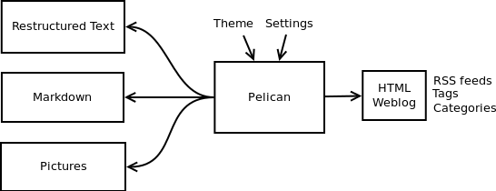
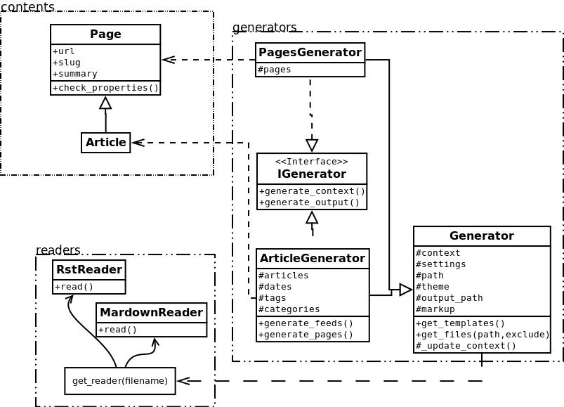

Pelican 3.6.4.dev0¶
Pelican is a static site generator, written in Python. Highlights include:
- Write your content directly with your editor of choice in reStructuredText or Markdown formats
- Includes a simple CLI tool to (re)generate your site
- Easy to interface with distributed version control systems and web hooks
- Completely static output is easy to host anywhere
Ready to get started? Check out the Quickstart guide.
Features¶
Pelican 3 currently supports:
- Articles (e.g., blog posts) and pages (e.g., “About”, “Projects”, “Contact”)
- Comments, via an external service (Disqus). If you prefer to have more control over your comment data, self-hosted comments are another option. Check out the Pelican Plugins repository for more details.
- Theming support (themes are created using Jinja2 templates)
- Publication of articles in multiple languages
- Atom/RSS feeds
- Code syntax highlighting
- Import from WordPress, Dotclear, or RSS feeds
- Integration with external tools: Twitter, Google Analytics, etc. (optional)
- Fast rebuild times thanks to content caching and selective output writing
Why the name “Pelican”?¶
“Pelican” is an anagram for calepin, which means “notebook” in French. ;)
Source code¶
You can access the source code at: https://github.com/getpelican/pelican
How to get help, contribute, or provide feedback¶
Documentation¶
Quickstart¶
Reading through all the documentation is highly recommended, but for the truly impatient, following are some quick steps to get started.
Installation¶
Install Pelican (and optionally Markdown if you intend to use it) on Python
2.7.x or Python 3.3+ by running the following command in your preferred
terminal, prefixing with sudo if permissions warrant:
pip install pelican markdown
Create a project¶
First, choose a name for your project, create an appropriately-named directory for your site, and switch to that directory:
mkdir -p ~/projects/yoursite
cd ~/projects/yoursite
Create a skeleton project via the pelican-quickstart command, which begins
by asking some questions about your site:
pelican-quickstart
For questions that have default values denoted in brackets, feel free to use
the Return key to accept those default values. When asked for your URL prefix,
enter your domain name as indicated (e.g., http://example.com).
Create an article¶
You cannot run Pelican until you have created some content. Use your preferred text editor to create your first article with the following content:
Title: My First Review
Date: 2010-12-03 10:20
Category: Review
Following is a review of my favorite mechanical keyboard.
Given that this example article is in Markdown format, save it as
~/projects/yoursite/content/keyboard-review.md.
Generate your site¶
From your site directory, run the pelican command to generate your site:
pelican content
Your site has now been generated inside the output directory. (You may see a
warning related to feeds, but that is normal when developing locally and can be
ignored for now.)
Preview your site¶
Open a new terminal session and run the following commands to switch to your
output directory and launch Pelican’s web server:
cd ~/projects/yoursite/output
python -m pelican.server
Preview your site by navigating to http://localhost:8000/ in your browser.
Continue reading the other documentation sections for more detail, and check out the Pelican wiki’s Tutorials page for links to community-published tutorials.
Installing Pelican¶
Pelican currently runs best on Python 2.7.x and 3.3+; earlier versions of Python are not supported.
You can install Pelican via several different methods. The simplest is via pip:
pip install pelican
(Keep in mind that operating systems will often require you to prefix the above
command with sudo in order to install Pelican system-wide.)
While the above is the simplest method, the recommended approach is to create a virtual environment for Pelican via virtualenv before installing Pelican. Assuming you have virtualenv installed, you can then open a new terminal session and create a new virtual environment for Pelican:
virtualenv ~/virtualenvs/pelican
cd ~/virtualenvs/pelican
source bin/activate
Once the virtual environment has been created and activated, Pelican can be
installed via pip install pelican as noted above. Alternatively, if
you have the project source, you can install Pelican using the distutils
method:
cd path-to-Pelican-source
python setup.py install
If you have Git installed and prefer to install the latest bleeding-edge version of Pelican rather than a stable release, use the following command:
pip install -e "git+https://github.com/getpelican/pelican.git#egg=pelican"
Once Pelican is installed, you can run pelican --help to see basic usage
options. For more detail, refer to the Publish section.
Optional packages¶
If you plan on using Markdown as a markup format, you’ll need to install the Markdown library:
pip install Markdown
Typographical enhancements can be enabled in your settings file, but first the requisite Typogrify library must be installed:
pip install typogrify
Dependencies¶
When Pelican is installed, the following dependent Python packages should be automatically installed without any action on your part:
- feedgenerator, to generate the Atom feeds
- jinja2, for templating support
- pygments, for syntax highlighting
- docutils, for supporting reStructuredText as an input format
- pytz, for timezone definitions
- blinker, an object-to-object and broadcast signaling system
- unidecode, for ASCII transliterations of Unicode text
- six, for Python 2 and 3 compatibility utilities
- MarkupSafe, for a markup safe string implementation
- python-dateutil, to read the date metadata
Upgrading¶
If you installed a stable Pelican release via pip and wish to upgrade to
the latest stable release, you can do so by adding --upgrade:
pip install --upgrade pelican
If you installed Pelican via distutils or the bleeding-edge method, simply perform the same step to install the most recent version.
Kickstart your site¶
Once Pelican has been installed, you can create a skeleton project via the
pelican-quickstart command, which begins by asking some questions about
your site:
pelican-quickstart
Once you finish answering all the questions, your project will consist of the following hierarchy (except for pages — shown in parentheses below — which you can optionally add yourself if you plan to create non-chronological content):
yourproject/
├── content
│ └── (pages)
├── output
├── develop_server.sh
├── fabfile.py
├── Makefile
├── pelicanconf.py # Main settings file
└── publishconf.py # Settings to use when ready to publish
The next step is to begin to adding content to the content folder that has been created for you.
Writing content¶
Articles and pages¶
Pelican considers “articles” to be chronological content, such as posts on a blog, and thus associated with a date.
The idea behind “pages” is that they are usually not temporal in nature and are used for content that does not change very often (e.g., “About” or “Contact” pages).
File metadata¶
Pelican tries to be smart enough to get the information it needs from the file system (for instance, about the category of your articles), but some information you need to provide in the form of metadata inside your files.
If you are writing your content in reStructuredText format, you can provide
this metadata in text files via the following syntax (give your file the
.rst extension):
My super title
##############
:date: 2010-10-03 10:20
:modified: 2010-10-04 18:40
:tags: thats, awesome
:category: yeah
:slug: my-super-post
:authors: Alexis Metaireau, Conan Doyle
:summary: Short version for index and feeds
Author and tag lists may be semicolon-separated instead, which allows you to write authors and tags containing commas:
:tags: pelican, publishing tool; pelican, bird
:authors: Metaireau, Alexis; Doyle, Conan
Pelican implements an extension to reStructuredText to enable support for the
abbr HTML tag. To use it, write something like this in your post:
This will be turned into :abbr:`HTML (HyperText Markup Language)`.
You can also use Markdown syntax (with a file ending in .md,
.markdown, .mkd, or .mdown). Markdown generation requires that you
first explicitly install the Markdown package, which can be done via pip
install Markdown.
Pelican also supports Markdown Extensions, which might have to be installed
separately if they are not included in the default Markdown package and can
be configured and loaded via the MD_EXTENSIONS setting.
Metadata syntax for Markdown posts should follow this pattern:
Title: My super title
Date: 2010-12-03 10:20
Modified: 2010-12-05 19:30
Category: Python
Tags: pelican, publishing
Slug: my-super-post
Authors: Alexis Metaireau, Conan Doyle
Summary: Short version for index and feeds
This is the content of my super blog post.
Readers for additional formats (such as AsciiDoc) are available via plugins. Refer to pelican-plugins repository for those.
Pelican can also process HTML files ending in .html and .htm. Pelican
interprets the HTML in a very straightforward manner, reading metadata from
meta tags, the title from the title tag, and the body out from the
body tag:
<html>
<head>
<title>My super title</title>
<meta name="tags" content="thats, awesome" />
<meta name="date" content="2012-07-09 22:28" />
<meta name="modified" content="2012-07-10 20:14" />
<meta name="category" content="yeah" />
<meta name="authors" content="Alexis Métaireau, Conan Doyle" />
<meta name="summary" content="Short version for index and feeds" />
</head>
<body>
This is the content of my super blog post.
</body>
</html>
With HTML, there is one simple exception to the standard metadata: tags can
be specified either via the tags metadata, as is standard in Pelican, or
via the keywords metadata, as is standard in HTML. The two can be used
interchangeably.
Note that, aside from the title, none of this article metadata is mandatory:
if the date is not specified and DEFAULT_DATE is set to 'fs', Pelican
will rely on the file’s “mtime” timestamp, and the category can be determined
by the directory in which the file resides. For example, a file located at
python/foobar/myfoobar.rst will have a category of foobar. If you would
like to organize your files in other ways where the name of the subfolder would
not be a good category name, you can set the setting USE_FOLDER_AS_CATEGORY
to False. When parsing dates given in the page metadata, Pelican supports
the W3C’s suggested subset ISO 8601.
Note
When experimenting with different settings (especially the metadata
ones) caching may interfere and the changes may not be visible. In
such cases disable caching with LOAD_CONTENT_CACHE = False or
use the --ignore-cache command-line switch.
modified should be last time you updated the article, and defaults to date if not specified.
Besides you can show modified in the templates, feed entries in feed readers will be updated automatically
when you set modified to the current date after you modified your article.
authors is a comma-separated list of article authors. If there’s only one author you
can use author field.
If you do not explicitly specify summary metadata for a given post, the
SUMMARY_MAX_LENGTH setting can be used to specify how many words from the
beginning of an article are used as the summary.
You can also extract any metadata from the filename through a regular
expression to be set in the FILENAME_METADATA setting. All named groups
that are matched will be set in the metadata object. The default value for the
FILENAME_METADATA setting will only extract the date from the filename. For
example, if you would like to extract both the date and the slug, you could set
something like: '(?P<date>\d{4}-\d{2}-\d{2})_(?P<slug>.*)'
Please note that the metadata available inside your files takes precedence over the metadata extracted from the filename.
Pages¶
If you create a folder named pages inside the content folder, all the
files in it will be used to generate static pages, such as About or
Contact pages. (See example filesystem layout below.)
You can use the DISPLAY_PAGES_ON_MENU setting to control whether all those
pages are displayed in the primary navigation menu. (Default is True.)
If you want to exclude any pages from being linked to or listed in the menu
then add a status: hidden attribute to its metadata. This is useful for
things like making error pages that fit the generated theme of your site.
Linking to internal content¶
From Pelican 3.1 onwards, it is now possible to specify intra-site links to files in the source content hierarchy instead of files in the generated hierarchy. This makes it easier to link from the current post to other content that may be sitting alongside that post (instead of having to determine where the other content will be placed after site generation).
To link to internal content (files in the content directory), use the
following syntax for the link target: {filename}path/to/file
Note: forward slashes, /,
are the required path separator in the {filename} directive
on all operating systems, including Windows.
For example, a Pelican project might be structured like this:
website/
├── content
│ ├── category/
│ │ └── article1.rst
│ ├── article2.md
│ └── pages
│ └── about.md
└── pelican.conf.py
In this example, article1.rst could look like this:
The first article
#################
:date: 2012-12-01 10:02
See below intra-site link examples in reStructuredText format.
`a link relative to the current file <{filename}../article2.md>`_
`a link relative to the content root <{filename}/article2.md>`_
and article2.md:
Title: The second article
Date: 2012-12-01 10:02
See below intra-site link examples in Markdown format.
[a link relative to the current file]({filename}category/article1.rst)
[a link relative to the content root]({filename}/category/article1.rst)
Linking to static files¶
Linking to non-article or non-page content uses the same {filename} syntax
as described above. It is important to remember that those files will not be
copied to the output directory unless the source directories containing them
are included in the STATIC_PATHS setting of the project’s pelicanconf.py
file. Pelican’s default configuration includes the images directory for
this, but others must be added manually. Forgetting to do so will result in
broken links.
For example, a project’s content directory might be structured like this:
content
├── images
│ └── han.jpg
├── pdfs
│ └── menu.pdf
└── pages
└── test.md
test.md would include:

[Our Menu]({filename}/pdfs/menu.pdf)
pelicanconf.py would include:
STATIC_PATHS = ['images', 'pdfs']
Site generation would then copy han.jpg to output/images/han.jpg,
menu.pdf to output/pdfs/menu.pdf, and write the appropriate links
in test.md.
Mixed content in the same directory¶
Starting with Pelican 3.5, static files can safely share a source directory with
page source files, without exposing the page sources in the generated site.
Any such directory must be added to both STATIC_PATHS and PAGE_PATHS
(or STATIC_PATHS and ARTICLE_PATHS). Pelican will identify and process
the page source files normally, and copy the remaining files as if they lived
in a separate directory reserved for static files.
Note: Placing static and content source files together in the same source
directory does not guarantee that they will end up in the same place in the
generated site. The easiest way to do this is by using the {attach} link
syntax (described below). Alternatively, the STATIC_SAVE_AS,
PAGE_SAVE_AS, and ARTICLE_SAVE_AS settings (and the corresponding
*_URL settings) can be configured to place files of different types
together, just as they could in earlier versions of Pelican.
Attaching static files¶
Starting with Pelican 3.5, static files can be “attached” to a page or article
using this syntax for the link target: {attach}path/to/file This works
like the {filename} syntax, but also relocates the static file into the
linking document’s output directory. If the static file originates from a
subdirectory beneath the linking document’s source, that relationship will be
preserved on output. Otherwise, it will become a sibling of the linking
document.
This only works for linking to static files, and only when they originate from
a directory included in the STATIC_PATHS setting.
For example, a project’s content directory might be structured like this:
content
├── blog
│ ├── icons
│ │ └── icon.png
│ ├── photo.jpg
│ └── testpost.md
└── downloads
└── archive.zip
pelicanconf.py would include:
PATH = 'content'
STATIC_PATHS = ['blog', 'downloads']
ARTICLE_PATHS = ['blog']
ARTICLE_SAVE_AS = '{date:%Y}/{slug}.html'
ARTICLE_URL = '{date:%Y}/{slug}.html'
testpost.md would include:
Title: Test Post
Category: test
Date: 2014-10-31


[Downloadable File]({attach}/downloads/archive.zip)
Site generation would then produce an output directory structured like this:
output
└── 2014
├── archive.zip
├── icons
│ └── icon.png
├── photo.jpg
└── test-post.html
Notice that all the files linked using {attach} ended up in or beneath
the article’s output directory.
If a static file is linked multiple times, the relocating feature of
{attach} will only work in the first of those links to be processed.
After the first link, Pelican will treat {attach} like {filename}.
This avoids breaking the already-processed links.
Be careful when linking to a file from multiple documents:
Since the first link to a file finalizes its location and Pelican does
not define the order in which documents are processed, using {attach} on a
file linked by multiple documents can cause its location to change from one
site build to the next. (Whether this happens in practice will depend on the
operating system, file system, version of Pelican, and documents being added,
modified, or removed from the project.) Any external sites linking to the
file’s old location might then find their links broken. It is therefore
advisable to use {attach} only if you use it in all links to a file, and only
if the linking documents share a single directory. Under these conditions,
the file’s output location will not change in future builds. In cases where
these precautions are not possible, consider using {filename} links instead
of {attach}, and letting the file’s location be determined by the project’s
STATIC_SAVE_AS and STATIC_URL settings. (Per-file save_as and
url overrides can still be set in EXTRA_PATH_METADATA.)
Linking to authors, categories, index and tags¶
You can link to authors, categories, index and tags using the {author}name,
{category}foobar, {index} and {tag}tagname syntax.
Deprecated internal link syntax¶
To remain compatible with earlier versions, Pelican still supports vertical bars
(||) in addition to curly braces ({}) for internal links. For example:
|filename|an_article.rst, |tag|tagname, |category|foobar.
The syntax was changed from || to {} to avoid collision with Markdown
extensions or reST directives. Support for the old syntax may eventually be
removed.
Importing an existing site¶
It is possible to import your site from WordPress, Tumblr, Dotclear, and RSS feeds using a simple script. See Importing an existing site.
Translations¶
It is possible to translate articles. To do so, you need to add a lang meta
attribute to your articles/pages and set a DEFAULT_LANG setting (which is
English [en] by default). With those settings in place, only articles with the
default language will be listed, and each article will be accompanied by a list
of available translations for that article.
Note
This core Pelican functionality does not create sub-sites
(e.g. example.com/de) with translated templates for each
language. For such advanced functionality the i18n_subsites
plugin can be used.
Pelican uses the article’s URL “slug” to determine if two or more articles are translations of one another. The slug can be set manually in the file’s metadata; if not set explicitly, Pelican will auto-generate the slug from the title of the article.
Here is an example of two articles, one in English and the other in French.
The English article:
Foobar is not dead
##################
:slug: foobar-is-not-dead
:lang: en
That's true, foobar is still alive!
And the French version:
Foobar n'est pas mort !
#######################
:slug: foobar-is-not-dead
:lang: fr
Oui oui, foobar est toujours vivant !
Post content quality notwithstanding, you can see that only item in common between the two articles is the slug, which is functioning here as an identifier. If you’d rather not explicitly define the slug this way, you must then instead ensure that the translated article titles are identical, since the slug will be auto-generated from the article title.
If you do not want the original version of one specific article to be detected
by the DEFAULT_LANG setting, use the translation metadata to specify
which posts are translations:
Foobar is not dead
##################
:slug: foobar-is-not-dead
:lang: en
:translation: true
That's true, foobar is still alive!
Syntax highlighting¶
Pelican can provide colorized syntax highlighting for your code blocks. To do so, you must use the following conventions inside your content files.
For reStructuredText, use the code-block directive to specify the type
of code to be highlighted (in these examples, we’ll use python):
.. code-block:: python
print("Pelican is a static site generator.")
For Markdown, which utilizes the CodeHilite extension to provide syntax highlighting, include the language identifier just above the code block, indenting both the identifier and the code:
There are two ways to specify the identifier:
:::python
print("The triple-colon syntax will *not* show line numbers.")
To display line numbers, use a path-less shebang instead of colons:
#!python
print("The path-less shebang syntax *will* show line numbers.")
The specified identifier (e.g. python, ruby) should be one that
appears on the list of available lexers.
When using reStructuredText the following options are available in the code-block directive:
| Option | Valid values | Description |
|---|---|---|
| anchorlinenos | N/A | If present wrap line numbers in <a> tags. |
| classprefix | string | String to prepend to token class names |
| hl_lines | numbers | List of lines to be highlighted. |
| lineanchors | string | Wrap each line in an anchor using this string and -linenumber. |
| linenos | string | If present or set to “table” output line numbers in a table, if set to “inline” output them inline. “none” means do not output the line numbers for this table. |
| linenospecial | number | If set every nth line will be given the ‘special’ css class. |
| linenostart | number | Line number for the first line. |
| linenostep | number | Print every nth line number. |
| lineseparator | string | String to print between lines of code, ‘n’ by default. |
| linespans | string | Wrap each line in a span using this and -linenumber. |
| nobackground | N/A | If set do not output background color for the wrapping element |
| nowrap | N/A | If set do not wrap the tokens at all. |
| tagsfile | string | ctags file to use for name definitions. |
| tagurlformat | string | format for the ctag links. |
Note that, depending on the version, your Pygments module might not have all of these options available. Refer to the HtmlFormatter section of the Pygments documentation for more details on each of the options.
For example, the following code block enables line numbers, starting at 153, and prefixes the Pygments CSS classes with pgcss to make the names more unique and avoid possible CSS conflicts:
.. code-block:: identifier
:classprefix: pgcss
:linenos: table
:linenostart: 153
<indented code block goes here>
It is also possible to specify the PYGMENTS_RST_OPTIONS variable in your
Pelican settings file to include options that will be automatically applied to
every code block.
For example, if you want to have line numbers displayed for every code block and a CSS prefix you would set this variable to:
PYGMENTS_RST_OPTIONS = {'classprefix': 'pgcss', 'linenos': 'table'}
If specified, settings for individual code blocks will override the defaults in your settings file.
Publishing drafts¶
If you want to publish an article as a draft (for friends to review before
publishing, for example), you can add a Status: draft attribute to its
metadata. That article will then be output to the drafts folder and not
listed on the index page nor on any category or tag page.
If your articles should be automatically published as a draft (to not accidentally
publish an article before it is finished) include the status in the DEFAULT_METADATA:
DEFAULT_METADATA = {
'status': 'draft',
}
To publish a post when the default status is draft, update the post’s
metadata to include Status: published.
Publish your site¶
Site generation¶
Once Pelican is installed and you have some content (e.g., in Markdown or reST
format), you can convert your content into HTML via the pelican command,
specifying the path to your content and (optionally) the path to your
settings file:
pelican /path/to/your/content/ [-s path/to/your/settings.py]
The above command will generate your site and save it in the output/
folder, using the default theme to produce a simple site. The default theme
consists of very simple HTML without styling and is provided so folks may use
it as a basis for creating their own themes.
You can also tell Pelican to watch for your modifications, instead of
manually re-running it every time you want to see your changes. To enable this,
run the pelican command with the -r or --autoreload option.
Pelican has other command-line switches available. Have a look at the help to see all the options you can use:
pelican --help
Viewing the generated files¶
The files generated by Pelican are static files, so you don’t actually need anything special to view them. You can use your browser to open the generated HTML files directly:
firefox output/index.html
Because the above method may have trouble locating your CSS and other linked assets, running a simple web server using Python will often provide a more reliable previewing experience.
For Python 2, run:
cd output
python -m SimpleHTTPServer
For Python 3, run:
cd output
python -m http.server
Once the basic server has been started, you can preview your site at http://localhost:8000/
Deployment¶
After you have generated your site, previewed it in your local development environment, and are ready to deploy it to production, you might first re-generate your site with any production-specific settings (e.g., analytics feeds, etc.) that you may have defined:
pelican content -s publishconf.py
To base your publish configuration on top of your pelicanconf.py, you
can import your pelicanconf settings by including the following line in
your publishconf.py:
from pelicanconf import *
If you have generated a publishconf.py using pelican-quickstart,
this line is included by default.
The steps for deploying your site will depend on where it will be hosted.
If you have SSH access to a server running Nginx or Apache, you might use the
rsync tool to transmit your site files:
rsync -avc --delete output/ host.example.com:/var/www/your-site/
There are many other deployment options, some of which can be configured when
first setting up your site via the pelican-quickstart command. See the
Tips page for detail on publishing via GitHub Pages.
Automation¶
While the pelican command is the canonical way to generate your site,
automation tools can be used to streamline the generation and publication
flow. One of the questions asked during the pelican-quickstart process
pertains to whether you want to automate site generation and publication.
If you answered “yes” to that question, a fabfile.py and
Makefile will be generated in the root of your project. These files,
pre-populated with certain information gleaned from other answers provided
during the pelican-quickstart process, are meant as a starting point and
should be customized to fit your particular needs and usage patterns. If you
find one or both of these automation tools to be of limited utility, these
files can deleted at any time and will not affect usage of the canonical
pelican command.
Following are automation tools that “wrap” the pelican command and can
simplify the process of generating, previewing, and uploading your site.
Fabric¶
The advantage of Fabric is that it is written in Python and thus can be used
in a wide range of environments. The downside is that it must be installed
separately. Use the following command to install Fabric, prefixing with
sudo if your environment requires it:
pip install Fabric
Note
Installing PyCrypto on Windows
Fabric depends upon PyCrypto, which is tricky to install
if your system doesn’t have a C compiler.
For Windows users, before installing Fabric, use
easy_install http://www.voidspace.org.uk/downloads/pycrypto26/pycrypto-2.6.win32-py2.7.exe
per this StackOverflow suggestion
You’re more likely to have success
with the Win32 versions of Python 2.7 and PyCrypto,
than with the Win64—even if your operating system is a 64-bit version of Windows.
Take a moment to open the fabfile.py file that was generated in your
project root. You will see a number of commands, any one of which can be
renamed, removed, and/or customized to your liking. Using the out-of-the-box
configuration, you can generate your site via:
fab build
If you’d prefer to have Pelican automatically regenerate your site every time a change is detected (which is handy when testing locally), use the following command instead:
fab regenerate
To serve the generated site so it can be previewed in your browser at http://localhost:8000/:
fab serve
If during the pelican-quickstart process you answered “yes” when asked
whether you want to upload your site via SSH, you can use the following command
to publish your site via rsync over SSH:
fab publish
These are just a few of the commands available by default, so feel free to
explore fabfile.py and see what other commands are available. More
importantly, don’t hesitate to customize fabfile.py to suit your specific
needs and preferences.
Make¶
A Makefile is also automatically created for you when you say “yes” to
the relevant question during the pelican-quickstart process. The advantage
of this method is that the make command is built into most POSIX systems
and thus doesn’t require installing anything else in order to use it. The
downside is that non-POSIX systems (e.g., Windows) do not include make,
and installing it on those systems can be a non-trivial task.
If you want to use make to generate your site using the settings in
pelicanconf.py, run:
make html
To generate the site for production, using the settings in publishconf.py,
run:
make publish
If you’d prefer to have Pelican automatically regenerate your site every time a change is detected (which is handy when testing locally), use the following command instead:
make regenerate
To serve the generated site so it can be previewed in your browser at http://localhost:8000/:
make serve
Normally you would need to run make regenerate and make serve in two
separate terminal sessions, but you can run both at once via:
make devserver
The above command will simultaneously run Pelican in regeneration mode as well as serve the output at http://localhost:8000. Once you are done testing your changes, you should stop the development server via:
./develop_server.sh stop
When you’re ready to publish your site, you can upload it via the method(s) you
chose during the pelican-quickstart questionnaire. For this example, we’ll
use rsync over ssh:
make rsync_upload
That’s it! Your site should now be live.
(The default Makefile and devserver.sh scripts use the python and
pelican executables to complete its tasks. If you want to use different
executables, such as python3, you can set the PY and PELICAN
environment variables, respectively, to override the default executable names.)
Settings¶
Pelican is configurable thanks to a settings file you can pass to the command line:
pelican content -s path/to/your/pelicanconf.py
(If you used the pelican-quickstart command, your primary settings file will
be named pelicanconf.py by default.)
Note
When experimenting with different settings (especially the metadata
ones) caching may interfere and the changes may not be visible. In
such cases disable caching with LOAD_CONTENT_CACHE = False or
use the --ignore-cache command-line switch.
Settings are configured in the form of a Python module (a file). There is an example settings file available for reference.
All the setting identifiers must be set in all-caps, otherwise they will not be processed. Setting values that are numbers (5, 20, etc.), booleans (True, False, None, etc.), dictionaries, or tuples should not be enclosed in quotation marks. All other values (i.e., strings) must be enclosed in quotation marks.
Unless otherwise specified, settings that refer to paths can be either absolute or relative to the configuration file.
The settings you define in the configuration file will be passed to the templates, which allows you to use your settings to add site-wide content.
Here is a list of settings for Pelican:
Basic settings¶
| Setting name (followed by default value, if any) | What does it do? |
|---|---|
AUTHOR |
Default author (put your name) |
DATE_FORMATS = {} |
If you manage multiple languages, you can set the date formatting here. See the Date format and locale section below for details. |
USE_FOLDER_AS_CATEGORY = True |
When you don’t specify a category in your post metadata, set this
setting to True, and organize your articles in subfolders, the
subfolder will become the category of your post. If set to False,
DEFAULT_CATEGORY will be used as a fallback. |
DEFAULT_CATEGORY = 'misc' |
The default category to fall back on. |
DEFAULT_DATE_FORMAT = '%a %d %B %Y' |
The default date format you want to use. |
DISPLAY_PAGES_ON_MENU = True |
Whether to display pages on the menu of the template. Templates may or may not honor this setting. |
DISPLAY_CATEGORIES_ON_MENU = True |
Whether to display categories on the menu of the template. Templates may or not honor this setting. |
DEFAULT_DATE = None |
The default date you want to use.
If 'fs', Pelican will use the file system
timestamp information (mtime) if it can’t get
date information from the metadata.
If given any other string, it will be parsed by the same method
as article metadata.
If set to a tuple object, the default datetime object will instead
be generated by passing the tuple to the
datetime.datetime constructor. |
DEFAULT_METADATA = {} |
The default metadata you want to use for all articles and pages. |
DOCUTILS_SETTINGS = {} |
Extra configuration settings for the docutils publisher (applicable only to reStructuredText). See Docutils Configuration settings for more details. |
FILENAME_METADATA = '(?P<date>\d{4}-\d{2}-\d{2}).*' |
The regexp that will be used to extract any metadata
from the filename. All named groups that are matched
will be set in the metadata object.
The default value will only extract the date from
the filename.
For example, if you would like to extract both the
date and the slug, you could set something like:
'(?P<date>\d{4}-\d{2}-\d{2})_(?P<slug>.*)'.
See Path metadata and SLUGIFY_SOURCE. |
PATH_METADATA = '' |
Like FILENAME_METADATA, but parsed from a page’s
full path relative to the content source directory.
See Path metadata. |
EXTRA_PATH_METADATA = {} |
Extra metadata dictionaries keyed by relative path. Relative paths require correct OS-specific directory separators (i.e. / in UNIX and \ in Windows) unlike some other Pelican file settings. See Path metadata. |
DELETE_OUTPUT_DIRECTORY = False |
Delete the output directory, and all of its contents, before generating new files. This can be useful in preventing older, unnecessary files from persisting in your output. However, this is a destructive setting and should be handled with extreme care. |
OUTPUT_RETENTION = [] |
A list of filenames that should be retained and not deleted from the
output directory. One use case would be the preservation of version
control data. For example: [".hg", ".git", ".bzr"] |
JINJA_EXTENSIONS = [] |
A list of any Jinja2 extensions you want to use. |
JINJA_FILTERS = {} |
A dictionary of custom Jinja2 filters you want to use.
The dictionary should map the filtername to the filter function.
For example: {'urlencode': urlencode_filter}
See Jinja custom filters documentation. |
LOCALE [1] |
Change the locale. A list of locales can be provided here or a single string representing one locale. When providing a list, all the locales will be tried until one works. |
LOG_FILTER = [] |
A list of tuples containing the logging level (up to warning)
and the message to be ignored.
For example: [(logging.WARN, 'TAG_SAVE_AS is set to False')] |
READERS = {} |
A dictionary of file extensions / Reader classes for Pelican to
process or ignore. For example, to avoid processing .html files,
set: READERS = {'html': None}. To add a custom reader for the
foo extension, set: READERS = {'foo': FooReader} |
IGNORE_FILES = ['.#*'] |
A list of glob patterns. Files and directories matching any
of these patterns will be ignored by the processor. For example,
the default ['.#*'] will ignore emacs lock files, and
['__pycache__'] would ignore Python 3’s bytecode caches. |
MD_EXTENSIONS = {...} |
A dict of the extensions that the Markdown processor
will use, with extensions’ settings as the values.
Refer to the Python Markdown documentation’s
Extensions section
for a complete list of supported extensions and their options.
Default is {'markdown.extensions.codehilite' : {'css_class': 'highlight'},
'markdown.extensions.extra': {}, 'markdown.extensions.meta': {}}.
(Note that the dictionary defined in your settings file will
update this default one.) |
OUTPUT_PATH = 'output/' |
Where to output the generated files. |
PATH |
Path to content directory to be processed by Pelican. If undefined,
and content path is not specified via an argument to the pelican
command, Pelican will use the current working directory. |
PAGE_PATHS = ['pages'] |
A list of directories and files to look at for pages,
relative to PATH. |
PAGE_EXCLUDES = [] |
A list of directories to exclude when looking for pages in addition
to ARTICLE_PATHS. |
ARTICLE_PATHS = [''] |
A list of directories and files to look at for articles,
relative to PATH. |
ARTICLE_EXCLUDES = [] |
A list of directories to exclude when looking for articles in addition
to PAGE_PATHS. |
OUTPUT_SOURCES = False |
Set to True if you want to copy the articles and pages in their
original format (e.g. Markdown or reStructuredText) to the
specified OUTPUT_PATH. |
OUTPUT_SOURCES_EXTENSION = '.text' |
Controls the extension that will be used by the SourcesGenerator.
Defaults to .text. If not a valid string the default value
will be used. |
RELATIVE_URLS = False |
Defines whether Pelican should use document-relative URLs or
not. Only set this to True when developing/testing and only
if you fully understand the effect it can have on links/feeds. |
PLUGINS = [] |
The list of plugins to load. See Plugins. |
PLUGIN_PATHS = [] |
A list of directories where to look for plugins. See Plugins. |
SITENAME = 'A Pelican Blog' |
Your site name |
SITEURL |
Base URL of your website. Not defined by default,
so it is best to specify your SITEURL; if you do not, feeds
will not be generated with properly-formed URLs. You should
include http:// and your domain, with no trailing
slash at the end. Example: SITEURL = 'http://mydomain.com' |
TEMPLATE_PAGES = None |
A mapping containing template pages that will be rendered with the blog entries. See Template pages. |
STATIC_PATHS = ['images'] |
A list of directories (relative to PATH) in which to look for
static files. Such files will be copied to the output directory
without modification. Articles, pages, and other content source
files will normally be skipped, so it is safe for a directory to
appear both here and in PAGE_PATHS or ARTICLE_PATHS.
Pelican’s default settings include the “images” directory here. |
STATIC_EXCLUDES = [] |
A list of directories to exclude when looking for static files. |
STATIC_EXCLUDE_SOURCES = True |
If set to False, content source files will not be skipped when
copying files found in STATIC_PATHS. This setting is for
backward compatibility with Pelican releases before version 3.5.
It has no effect unless STATIC_PATHS contains a directory that
is also in ARTICLE_PATHS or PAGE_PATHS. If you are trying
to publish your site’s source files, consider using the
OUTPUT_SOURCES setting instead. |
TIMEZONE |
The timezone used in the date information, to generate Atom and RSS feeds. See the Timezone section below for more info. |
TYPOGRIFY = False |
If set to True, several typographical improvements will be
incorporated into the generated HTML via the Typogrify library,
which can be installed via: pip install typogrify |
TYPOGRIFY_IGNORE_TAGS = [] |
A list of tags for Typogrify to ignore. By default
Typogrify will ignore pre and code tags. This
requires that Typogrify version 2.0.4 or later is installed |
DIRECT_TEMPLATES = ['index', 'categories', 'authors', 'archives'] |
List of templates that are used directly to render
content. Typically direct templates are used to generate
index pages for collections of content (e.g., tags and
category index pages). If the tag and category collections
are not needed, set DIRECT_TEMPLATES = ['index', 'archives'] |
PAGINATED_DIRECT_TEMPLATES = ['index'] |
Provides the direct templates that should be paginated. |
SUMMARY_MAX_LENGTH = 50 |
When creating a short summary of an article, this will
be the default length (measured in words) of the text created.
This only applies if your content does not otherwise
specify a summary. Setting to None will cause the summary
to be a copy of the original content. |
EXTRA_TEMPLATES_PATHS = [] |
A list of paths you want Jinja2 to search for templates.
Can be used to separate templates from the theme.
Example: projects, resume, profile ...
These templates need to use DIRECT_TEMPLATES setting. |
WITH_FUTURE_DATES = True |
If disabled, content with dates in the future will get a default
status of draft. See Reading only modified content
for caveats. |
INTRASITE_LINK_REGEX = '[{|](?P<what>.*?)[|}]' |
Regular expression that is used to parse internal links. Default
syntax when linking to internal files, tags, etc., is to enclose
the identifier, say filename, in {} or ||. Identifier
between { and } goes into the what capturing group.
For details see Linking to internal content. |
PYGMENTS_RST_OPTIONS = [] |
A list of default Pygments settings for your reStructuredText code blocks. See Syntax highlighting for a list of supported options. |
SLUGIFY_SOURCE = 'title' |
Specifies where you want the slug to be automatically generated
from. Can be set to title to use the ‘Title:’ metadata tag or
basename to use the article’s file name when creating the slug. |
CACHE_CONTENT = False |
If True, saves content in caches.
See Reading only modified content for details about caching. |
CONTENT_CACHING_LAYER = 'reader' |
If set to 'reader', save only the raw content and metadata
returned by readers. If set to 'generator', save processed
content objects. |
CACHE_PATH = 'cache' |
Directory in which to store cache files. |
GZIP_CACHE = True |
If True, use gzip to (de)compress the cache files. |
CHECK_MODIFIED_METHOD = 'mtime' |
Controls how files are checked for modifications. |
LOAD_CONTENT_CACHE = False |
If True, load unmodified content from caches. |
WRITE_SELECTED = [] |
If this list is not empty, only output files with their paths in this list are written. Paths should be either absolute or relative to the current Pelican working directory. For possible use cases see Writing only selected content. |
FORMATTED_FIELDS = ['summary'] |
A list of metadata fields containing reST/Markdown content to be parsed and translated to HTML. |
| [1] | Default is the system locale. |
URL settings¶
The first thing to understand is that there are currently two supported methods
for URL formation: relative and absolute. Relative URLs are useful
when testing locally, and absolute URLs are reliable and most useful when
publishing. One method of supporting both is to have one Pelican configuration
file for local development and another for publishing. To see an example of this
type of setup, use the pelican-quickstart script as described in the
Installation section, which will produce two separate
configuration files for local development and publishing, respectively.
You can customize the URLs and locations where files will be saved. The
*_URL and *_SAVE_AS variables use Python’s format strings. These
variables allow you to place your articles in a location such as
{slug}/index.html and link to them as {slug} for clean URLs (see
example below). These settings give you the flexibility to place your articles
and pages anywhere you want.
Note
If you specify a datetime directive, it will be substituted using the
input files’ date metadata attribute. If the date is not specified for a
particular file, Pelican will rely on the file’s mtime timestamp.
Check the Python datetime documentation for more information.
Also, you can use other file metadata attributes as well:
- slug
- date
- lang
- author
- category
Example usage:
ARTICLE_URL = 'posts/{date:%Y}/{date:%b}/{date:%d}/{slug}/'ARTICLE_SAVE_AS = 'posts/{date:%Y}/{date:%b}/{date:%d}/{slug}/index.html'PAGE_URL = 'pages/{slug}/'PAGE_SAVE_AS = 'pages/{slug}/index.html'
This would save your articles into something like /posts/2011/Aug/07/sample-post/index.html,
save your pages into /pages/about/index.html, and render them available at
URLs of /posts/2011/Aug/07/sample-post/ and /pages/about/, respectively.
| Setting name (followed by default value, if any) | What does it do? |
|---|---|
ARTICLE_URL = '{slug}.html' |
The URL to refer to an article. |
ARTICLE_SAVE_AS = '{slug}.html' |
The place where we will save an article. |
ARTICLE_LANG_URL = '{slug}-{lang}.html' |
The URL to refer to an article which doesn’t use the default language. |
ARTICLE_LANG_SAVE_AS = '{slug}-{lang}.html' |
The place where we will save an article which doesn’t use the default language. |
DRAFT_URL = 'drafts/{slug}.html' |
The URL to refer to an article draft. |
DRAFT_SAVE_AS = 'drafts/{slug}.html' |
The place where we will save an article draft. |
DRAFT_LANG_URL = 'drafts/{slug}-{lang}.html' |
The URL to refer to an article draft which doesn’t use the default language. |
DRAFT_LANG_SAVE_AS = 'drafts/{slug}-{lang}.html' |
The place where we will save an article draft which doesn’t use the default language. |
PAGE_URL = 'pages/{slug}.html' |
The URL we will use to link to a page. |
PAGE_SAVE_AS = 'pages/{slug}.html' |
The location we will save the page. This value has to be the same as PAGE_URL or you need to use a rewrite in your server config. |
PAGE_LANG_URL = 'pages/{slug}-{lang}.html' |
The URL we will use to link to a page which doesn’t use the default language. |
PAGE_LANG_SAVE_AS = 'pages/{slug}-{lang}.html' |
The location we will save the page which doesn’t use the default language. |
CATEGORY_URL = 'category/{slug}.html' |
The URL to use for a category. |
CATEGORY_SAVE_AS = 'category/{slug}.html' |
The location to save a category. |
TAG_URL = 'tag/{slug}.html' |
The URL to use for a tag. |
TAG_SAVE_AS = 'tag/{slug}.html' |
The location to save the tag page. |
AUTHOR_URL = 'author/{slug}.html' |
The URL to use for an author. |
AUTHOR_SAVE_AS = 'author/{slug}.html' |
The location to save an author. |
YEAR_ARCHIVE_SAVE_AS = '' |
The location to save per-year archives of your posts. |
MONTH_ARCHIVE_SAVE_AS = '' |
The location to save per-month archives of your posts. |
DAY_ARCHIVE_SAVE_AS = '' |
The location to save per-day archives of your posts. |
SLUG_SUBSTITUTIONS = () |
Substitutions to make prior to stripping out
non-alphanumerics when generating slugs. Specified
as a list of 3-tuples of (from, to, skip) which are
applied in order. skip is a boolean indicating whether
or not to skip replacement of non-alphanumeric characters.
Useful for backward compatibility with existing URLs. |
AUTHOR_SUBSTITUTIONS = () |
Substitutions for authors. SLUG_SUBSTITUTIONS is not
taken into account here! |
CATEGORY_SUBSTITUTIONS = () |
Added to SLUG_SUBSTITUTIONS for categories. |
TAG_SUBSTITUTIONS = () |
Added to SLUG_SUBSTITUTIONS for tags. |
Note
If you do not want one or more of the default pages to be created (e.g.,
you are the only author on your site and thus do not need an Authors page),
set the corresponding *_SAVE_AS setting to '' to prevent the
relevant page from being generated.
Note
Substitutions are applied in order with the side effect that keeping
non-alphanum characters applies to the whole string when a replacement
is made. For example if you have the following setting
SLUG_SUBSTITUTIONS = (('C++', 'cpp'), ('keep dot', 'keep.dot', True))
the string Keep Dot will be converted to keep.dot, however
C++ will keep dot will be converted to cpp will keep.dot instead
of cpp-will-keep.dot!
If you want to keep non-alphanum characters only for tags or categories
but not other slugs then configure TAG_SUBSTITUTIONS and
CATEGORY_SUBSTITUTIONS respectively!
Pelican can optionally create per-year, per-month, and per-day archives of your
posts. These secondary archives are disabled by default but are automatically
enabled if you supply format strings for their respective _SAVE_AS settings.
Period archives fit intuitively with the hierarchical model of web URLs and can
make it easier for readers to navigate through the posts you’ve written over time.
Example usage:
YEAR_ARCHIVE_SAVE_AS = 'posts/{date:%Y}/index.html'MONTH_ARCHIVE_SAVE_AS = 'posts/{date:%Y}/{date:%b}/index.html'
With these settings, Pelican will create an archive of all your posts for the
year at (for instance) posts/2011/index.html and an archive of all your
posts for the month at posts/2011/Aug/index.html.
Note
Period archives work best when the final path segment is index.html.
This way a reader can remove a portion of your URL and automatically
arrive at an appropriate archive of posts, without having to specify
a page name.
DIRECT_TEMPLATES, which are ['index', 'tags', 'categories', 'archives']
by default, work a bit differently than noted above. Only the _SAVE_AS
settings are available, but it is available for any direct template.
| Setting name (followed by default value) | What does it do? |
|---|---|
ARCHIVES_SAVE_AS = 'archives.html' |
The location to save the article archives page. |
YEAR_ARCHIVE_SAVE_AS = '' |
The location to save per-year archives of your posts. |
MONTH_ARCHIVE_SAVE_AS = '' |
The location to save per-month archives of your posts. |
DAY_ARCHIVE_SAVE_AS = '' |
The location to save per-day archives of your posts. |
AUTHORS_SAVE_AS = 'authors.html' |
The location to save the author list. |
CATEGORIES_SAVE_AS = 'categories.html' |
The location to save the category list. |
TAGS_SAVE_AS = 'tags.html' |
The location to save the tag list. |
INDEX_SAVE_AS = 'index.html' |
The location to save the list of all articles. |
URLs for direct template pages are theme-dependent. Some themes use
corresponding *_URL setting as string, while others hard-code them:
'archives.html', 'authors.html', 'categories.html', 'tags.html'.
Timezone¶
If no timezone is defined, UTC is assumed. This means that the generated Atom and RSS feeds will contain incorrect date information if your locale is not UTC.
Pelican issues a warning in case this setting is not defined, as it was not mandatory in previous versions.
Have a look at the wikipedia page to get a list of valid timezone values.
Date format and locale¶
If no DATE_FORMATS are set, Pelican will fall back to
DEFAULT_DATE_FORMAT. If you need to maintain multiple languages with
different date formats, you can set the DATE_FORMATS dictionary using the
language name (lang metadata in your post content) as the key.
In addition to the standard C89 strftime format codes that are listed in
Python strftime documentation, you can use - character between % and
the format character to remove any leading zeros. For example, %d/%m/%Y will
output 01/01/2014 whereas %-d/%-m/%Y will result in 1/1/2014.
DATE_FORMATS = {
'en': '%a, %d %b %Y',
'jp': '%Y-%m-%d(%a)',
}
You can set locale to further control date format:
LOCALE = ('usa', 'jpn', # On Windows
'en_US', 'ja_JP' # On Unix/Linux
)
Also, it is possible to set different locale settings for each language. If you
put (locale, format) tuples in the dict, this will override the LOCALE
setting above:
# On Unix/Linux
DATE_FORMATS = {
'en': ('en_US','%a, %d %b %Y'),
'jp': ('ja_JP','%Y-%m-%d(%a)'),
}
# On Windows
DATE_FORMATS = {
'en': ('usa','%a, %d %b %Y'),
'jp': ('jpn','%Y-%m-%d(%a)'),
}
This is a list of available locales on Windows . On Unix/Linux, usually you
can get a list of available locales via the locale -a command; see manpage
locale(1) for more information.
Template pages¶
If you want to generate custom pages besides your blog entries, you can point any Jinja2 template file with a path pointing to the file and the destination path for the generated file.
For instance, if you have a blog with three static pages — a list of books, your resume, and a contact page — you could have:
TEMPLATE_PAGES = {'src/books.html': 'dest/books.html',
'src/resume.html': 'dest/resume.html',
'src/contact.html': 'dest/contact.html'}
Path metadata¶
Not all metadata needs to be embedded in source file itself. For example, blog posts are often named
following a YYYY-MM-DD-SLUG.rst pattern, or nested into
YYYY/MM/DD-SLUG directories. To extract metadata from the
filename or path, set FILENAME_METADATA or PATH_METADATA to
regular expressions that use Python’s group name notation (?P<name>…).
If you want to attach additional metadata but don’t want to encode
it in the path, you can set EXTRA_PATH_METADATA:
EXTRA_PATH_METADATA = {
'relative/path/to/file-1': {
'key-1a': 'value-1a',
'key-1b': 'value-1b',
},
'relative/path/to/file-2': {
'key-2': 'value-2',
},
}
This can be a convenient way to shift the installed location of a particular file:
# Take advantage of the following defaults
# STATIC_SAVE_AS = '{path}'
# STATIC_URL = '{path}'
STATIC_PATHS = [
'static/robots.txt',
]
EXTRA_PATH_METADATA = {
'static/robots.txt': {'path': 'robots.txt'},
}
Feed settings¶
By default, Pelican uses Atom feeds. However, it is also possible to use RSS feeds if you prefer.
Pelican generates category feeds as well as feeds for all your articles. It does
not generate feeds for tags by default, but it is possible to do so using
the TAG_FEED_ATOM and TAG_FEED_RSS settings:
| Setting name (followed by default value, if any) | What does it do? |
|---|---|
FEED_DOMAIN = None, i.e. base URL is “/” |
The domain prepended to feed URLs. Since feed URLs
should always be absolute, it is highly recommended
to define this (e.g., “http://feeds.example.com”). If
you have already explicitly defined SITEURL (see
above) and want to use the same domain for your
feeds, you can just set: FEED_DOMAIN = SITEURL. |
FEED_ATOM = None, i.e. no Atom feed |
Relative URL to output the Atom feed. |
FEED_RSS = None, i.e. no RSS |
Relative URL to output the RSS feed. |
FEED_ALL_ATOM = 'feeds/all.atom.xml' |
Relative URL to output the all-posts Atom feed: this feed will contain all posts regardless of their language. |
FEED_ALL_RSS = None, i.e. no all-posts RSS |
Relative URL to output the all-posts RSS feed: this feed will contain all posts regardless of their language. |
CATEGORY_FEED_ATOM = 'feeds/%s.atom.xml' [2] |
Where to put the category Atom feeds. |
CATEGORY_FEED_RSS = None, i.e. no RSS |
Where to put the category RSS feeds. |
AUTHOR_FEED_ATOM = 'feeds/%s.atom.xml' [2] |
Where to put the author Atom feeds. |
AUTHOR_FEED_RSS = 'feeds/%s.rss.xml' [2] |
Where to put the author RSS feeds. |
TAG_FEED_ATOM = None, i.e. no tag feed |
Relative URL to output the tag Atom feed. It should be defined using a “%s” match in the tag name. |
TAG_FEED_RSS = None, i.e. no RSS tag feed |
Relative URL to output the tag RSS feed |
FEED_MAX_ITEMS |
Maximum number of items allowed in a feed. Feed item quantity is unrestricted by default. |
If you don’t want to generate some or any of these feeds, set the above variables to None.
| [2] | (1, 2, 3) %s is the name of the category. |
FeedBurner¶
If you want to use FeedBurner for your feed, you will likely need to decide
upon a unique identifier. For example, if your site were called “Thyme” and
hosted on the www.example.com domain, you might use “thymefeeds” as your
unique identifier, which we’ll use throughout this section for illustrative
purposes. In your Pelican settings, set the FEED_ATOM attribute to
thymefeeds/main.xml to create an Atom feed with an original address of
http://www.example.com/thymefeeds/main.xml. Set the FEED_DOMAIN
attribute to http://feeds.feedburner.com, or http://feeds.example.com if
you are using a CNAME on your own domain (i.e., FeedBurner’s “MyBrand” feature).
There are two fields to configure in the FeedBurner interface: “Original Feed” and “Feed
Address”. In this example, the “Original Feed” would be
http://www.example.com/thymefeeds/main.xml and the “Feed Address” suffix
would be thymefeeds/main.xml.
Pagination¶
The default behaviour of Pelican is to list all the article titles along with a short description on the index page. While this works well for small-to-medium sites, sites with a large quantity of articles will probably benefit from paginating this list.
You can use the following settings to configure the pagination.
| Setting name (followed by default value, if any) | What does it do? |
|---|---|
DEFAULT_ORPHANS = 0 |
The minimum number of articles allowed on the last page. Use this when you don’t want the last page to only contain a handful of articles. |
DEFAULT_PAGINATION = False |
The maximum number of articles to include on a page, not including orphans. False to disable pagination. |
PAGINATION_PATTERNS |
A set of patterns that are used to determine advanced pagination output. |
Using Pagination Patterns¶
The PAGINATION_PATTERNS setting can be used to configure where
subsequent pages are created. The setting is a sequence of three
element tuples, where each tuple consists of:
(minimum page, URL setting, SAVE_AS setting,)
For example, if you wanted the first page to just be /, and the
second (and subsequent) pages to be /page/2/, you would set
PAGINATION_PATTERNS as follows:
PAGINATION_PATTERNS = (
(1, '{base_name}/', '{base_name}/index.html'),
(2, '{base_name}/page/{number}/', '{base_name}/page/{number}/index.html'),
)
This would cause the first page to be written to
{base_name}/index.html, and subsequent ones would be written into
page/{number} directories.
Translations¶
Pelican offers a way to translate articles. See the Content section for more information.
| Setting name (followed by default value, if any) | What does it do? |
|---|---|
DEFAULT_LANG = 'en' |
The default language to use. |
TRANSLATION_FEED_ATOM = 'feeds/all-%s.atom.xml' [3] |
Where to put the Atom feed for translations. |
TRANSLATION_FEED_RSS = None, i.e. no RSS |
Where to put the RSS feed for translations. |
| [3] | %s is the language |
Ordering content¶
| Setting name (followed by default value) | What does it do? |
|---|---|
NEWEST_FIRST_ARCHIVES = True |
Order archives by newest first by date. (False: orders by date with older articles first.) |
REVERSE_CATEGORY_ORDER = False |
Reverse the category order. (True: lists by reverse alphabetical order; default lists alphabetically.) |
ARTICLE_ORDER_BY = 'reversed-date' |
Defines how the articles (articles_page.object_list in
the template) are sorted. Valid options are: metadata as a
string (use reversed- prefix the reverse the sort order),
special option 'basename' which will use the basename of
the file (without path) or a custom function to extract the
sorting key from articles. The default value,
'reversed-date', will sort articles by date in reverse
order (i.e. newest article comes first). |
PAGE_ORDER_BY = 'basename' |
Defines how the pages (PAGES variable in the template)
are sorted. Options are same as ARTICLE_ORDER_BY.
The default value, 'basename' will sort pages by their
basename. |
Themes¶
Creating Pelican themes is addressed in a dedicated section (see Creating themes). However, here are the settings that are related to themes.
| Setting name (followed by default value, if any) | What does it do? |
|---|---|
THEME |
Theme to use to produce the output. Can be a relative
or absolute path to a theme folder, or the name of a
default theme or a theme installed via
pelican-themes (see below). |
THEME_STATIC_DIR = 'theme' |
Destination directory in the output path where Pelican will place the files collected from THEME_STATIC_PATHS. Default is theme. |
THEME_STATIC_PATHS = ['static'] |
Static theme paths you want to copy. Default value is static, but if your theme has other static paths, you can put them here. If files or directories with the same names are included in the paths defined in this settings, they will be progressively overwritten. |
CSS_FILE = 'main.css' |
Specify the CSS file you want to load. |
By default, two themes are available. You can specify them using the THEME
setting or by passing the -t option to the pelican command:
- notmyidea
- simple (a synonym for “plain text” :)
There are a number of other themes available at https://github.com/getpelican/pelican-themes. Pelican comes with pelican-themes, a small script for managing themes.
You can define your own theme, either by starting from scratch or by duplicating and modifying a pre-existing theme. Here is a guide on how to create your theme.
Following are example ways to specify your preferred theme:
# Specify name of a built-in theme
THEME = "notmyidea"
# Specify name of a theme installed via the pelican-themes tool
THEME = "chunk"
# Specify a customized theme, via path relative to the settings file
THEME = "themes/mycustomtheme"
# Specify a customized theme, via absolute path
THEME = "/home/myuser/projects/mysite/themes/mycustomtheme"
The built-in notmyidea theme can make good use of the following settings. Feel
free to use them in your themes as well.
| Setting name | What does it do? |
|---|---|
SITESUBTITLE |
A subtitle to appear in the header. |
DISQUS_SITENAME |
Pelican can handle Disqus comments. Specify the Disqus sitename identifier here. |
GITHUB_URL |
Your GitHub URL (if you have one). It will then use this information to create a GitHub ribbon. |
GOOGLE_ANALYTICS |
Set to ‘UA-XXXX-YYYY’ to activate Google Analytics. |
GOSQUARED_SITENAME |
Set to ‘XXX-YYYYYY-X’ to activate GoSquared. |
MENUITEMS |
A list of tuples (Title, URL) for additional menu items to appear at the beginning of the main menu. |
PIWIK_URL |
URL to your Piwik server - without ‘http://‘ at the beginning. |
PIWIK_SSL_URL |
If the SSL-URL differs from the normal Piwik-URL you have to include this setting too. (optional) |
PIWIK_SITE_ID |
ID for the monitored website. You can find the ID in the Piwik admin interface > Settings > Websites. |
LINKS |
A list of tuples (Title, URL) for links to appear on the header. |
SOCIAL |
A list of tuples (Title, URL) to appear in the “social” section. |
TWITTER_USERNAME |
Allows for adding a button to articles to encourage others to tweet about them. Add your Twitter username if you want this button to appear. |
LINKS_WIDGET_NAME |
Allows override of the name of the links widget. If not specified, defaults to “links”. |
SOCIAL_WIDGET_NAME |
Allows override of the name of the “social” widget. If not specified, defaults to “social”. |
In addition, you can use the “wide” version of the notmyidea theme by
adding the following to your configuration:
CSS_FILE = "wide.css"
Logging¶
Sometimes, a long list of warnings may appear during site generation. Finding
the meaningful error message in the middle of tons of annoying log output
can be quite tricky. In order to filter out redundant log messages, Pelican
comes with the LOG_FILTER setting.
LOG_FILTER should be a list of tuples (level, msg), each of them being
composed of the logging level (up to warning) and the message to be ignored.
Simply populate the list with the log messages you want to hide, and they will
be filtered out.
For example: [(logging.WARN, 'TAG_SAVE_AS is set to False')]
Reading only modified content¶
To speed up the build process, Pelican can optionally read only articles and pages with modified content.
When Pelican is about to read some content source file:
The hash or modification time information for the file from a previous build are loaded from a cache file if
LOAD_CONTENT_CACHEisTrue. These files are stored in theCACHE_PATHdirectory. If the file has no record in the cache file, it is read as usual.The file is checked according to
CHECK_MODIFIED_METHOD:- If set to
'mtime', the modification time of the file is checked. - If set to a name of a function provided by the
hashlibmodule, e.g.'md5', the file hash is checked. - If set to anything else or the necessary information about the file cannot be found in the cache file, the content is read as usual.
- If set to
If the file is considered unchanged, the content data saved in a previous build corresponding to the file is loaded from the cache, and the file is not read.
If the file is considered changed, the file is read and the new modification information and the content data are saved to the cache if
CACHE_CONTENTisTrue.
If CONTENT_CACHING_LAYER is set to 'reader' (the default),
the raw content and metadata returned by a reader are cached. If this
setting is instead set to 'generator', the processed content
object is cached. Caching the processed content object may conflict
with plugins (as some reading related signals may be skipped) and the
WITH_FUTURE_DATES functionality (as the draft status of the
cached content objects would not change automatically over time).
Checking modification times is faster than comparing file hashes,
but it is not as reliable because mtime information can be lost,
e.g., when copying content source files using the cp or rsync
commands without the mtime preservation mode (which for rsync
can be invoked by passing the --archive flag).
The cache files are Python pickles, so they may not be readable by
different versions of Python as the pickle format often changes. If
such an error is encountered, it is caught and the cache file is
rebuilt automatically in the new format. The cache files will also be
rebuilt after the GZIP_CACHE setting has been changed.
The --ignore-cache command-line option is useful when the
whole cache needs to be regenerated, such as when making modifications
to the settings file that will affect the cached content, or just for
debugging purposes. When Pelican runs in autoreload mode, modification
of the settings file will make it ignore the cache automatically if
AUTORELOAD_IGNORE_CACHE is True.
Note that even when using cached content, all output is always
written, so the modification times of the generated *.html files
will always change. Therefore, rsync-based uploading may benefit
from the --checksum option.
Writing only selected content¶
When only working on a single article or page, or making tweaks to
your theme, it is often desirable to generate and review your work
as quickly as possible. In such cases, generating and writing the
entire site output is often unnecessary. By specifying only the
desired files as output paths in the WRITE_SELECTED list,
only those files will be written. This list can be also specified
on the command line using the --write-selected option, which
accepts a comma-separated list of output file paths. By default this
list is empty, so all output is written.
Example settings¶
# -*- coding: utf-8 -*-
from __future__ import unicode_literals
AUTHOR = 'Alexis Métaireau'
SITENAME = "Alexis' log"
SITEURL = 'http://blog.notmyidea.org'
TIMEZONE = "Europe/Paris"
# can be useful in development, but set to False when you're ready to publish
RELATIVE_URLS = True
GITHUB_URL = 'http://github.com/ametaireau/'
DISQUS_SITENAME = "blog-notmyidea"
REVERSE_CATEGORY_ORDER = True
LOCALE = "C"
DEFAULT_PAGINATION = 4
DEFAULT_DATE = (2012, 3, 2, 14, 1, 1)
FEED_ALL_RSS = 'feeds/all.rss.xml'
CATEGORY_FEED_RSS = 'feeds/%s.rss.xml'
LINKS = (('Biologeek', 'http://biologeek.org'),
('Filyb', "http://filyb.info/"),
('Libert-fr', "http://www.libert-fr.com"),
('N1k0', "http://prendreuncafe.com/blog/"),
('Tarek Ziadé', "http://ziade.org/blog"),
('Zubin Mithra', "http://zubin71.wordpress.com/"),)
SOCIAL = (('twitter', 'http://twitter.com/ametaireau'),
('lastfm', 'http://lastfm.com/user/akounet'),
('github', 'http://github.com/ametaireau'),)
# global metadata to all the contents
DEFAULT_METADATA = {'yeah': 'it is'}
# path-specific metadata
EXTRA_PATH_METADATA = {
'extra/robots.txt': {'path': 'robots.txt'},
}
# static paths will be copied without parsing their contents
STATIC_PATHS = [
'pictures',
'extra/robots.txt',
]
# custom page generated with a jinja2 template
TEMPLATE_PAGES = {'pages/jinja2_template.html': 'jinja2_template.html'}
# code blocks with line numbers
PYGMENTS_RST_OPTIONS = {'linenos': 'table'}
# foobar will not be used, because it's not in caps. All configuration keys
# have to be in caps
foobar = "barbaz"
Creating themes¶
To generate its HTML output, Pelican uses the Jinja templating engine due to its flexibility and straightforward syntax. If you want to create your own theme, feel free to take inspiration from the “simple” theme.
To generate your site using a theme you have created (or downloaded manually and
then modified), you can specify that theme via the -t flag:
pelican content -s pelicanconf.py -t /projects/your-site/themes/your-theme
If you’d rather not specify the theme on every invocation, you can define
THEME in your settings to point to the location of your preferred theme.
Structure¶
To make your own theme, you must follow the following structure:
├── static
│ ├── css
│ └── images
└── templates
├── archives.html // to display archives
├── period_archives.html // to display time-period archives
├── article.html // processed for each article
├── author.html // processed for each author
├── authors.html // must list all the authors
├── categories.html // must list all the categories
├── category.html // processed for each category
├── index.html // the index (list all the articles)
├── page.html // processed for each page
├── tag.html // processed for each tag
└── tags.html // must list all the tags. Can be a tag cloud.
- static contains all the static assets, which will be copied to the output theme folder. The above filesystem layout includes CSS and image folders, but those are just examples. Put what you need here.
- templates contains all the templates that will be used to generate the content. The template files listed above are mandatory; you can add your own templates if it helps you keep things organized while creating your theme.
Templates and variables¶
The idea is to use a simple syntax that you can embed into your HTML pages. This document describes which templates should exist in a theme, and which variables will be passed to each template at generation time.
All templates will receive the variables defined in your settings file, as long as they are in all-caps. You can access them directly.
Common variables¶
All of these settings will be available to all templates.
| Variable | Description |
|---|---|
| output_file | The name of the file currently being generated. For instance, when Pelican is rendering the home page, output_file will be “index.html”. |
| articles | The list of articles, ordered descending by date. All the elements are Article objects, so you can access their attributes (e.g. title, summary, author etc.). Sometimes this is shadowed (for instance in the tags page). You will then find info about it in the all_articles variable. |
| dates | The same list of articles, but ordered by date, ascending. |
| drafts | The list of draft articles |
| tags | A list of (tag, articles) tuples, containing all the tags. |
| categories | A list of (category, articles) tuples, containing all the categories and corresponding articles (values) |
| pages | The list of pages |
| hidden_pages | The list of hidden pages |
Sorting¶
URL wrappers (currently categories, tags, and authors), have comparison methods that allow them to be easily sorted by name:
{% for tag, articles in tags|sort %}
If you want to sort based on different criteria, Jinja’s sort command has a number of options.
Date Formatting¶
Pelican formats the date according to your settings and locale
(DATE_FORMATS/DEFAULT_DATE_FORMAT) and provides a
locale_date attribute. On the other hand, the date attribute will
be a datetime object. If you need custom formatting for a date
different than your settings, use the Jinja filter strftime
that comes with Pelican. Usage is same as Python strftime format,
but the filter will do the right thing and format your date according
to the locale given in your settings:
{{ article.date|strftime('%d %B %Y') }}
index.html¶
This is the home page or index of your blog, generated at index.html.
If pagination is active, subsequent pages will reside in index{number}.html.
| Variable | Description |
|---|---|
| articles_paginator | A paginator object for the list of articles |
| articles_page | The current page of articles |
| articles_previous_page | The previous page of articles (None if page does
not exist) |
| articles_next_page | The next page of articles (None if page does
not exist) |
| dates_paginator | A paginator object for the article list, ordered by date, ascending. |
| dates_page | The current page of articles, ordered by date, ascending. |
| dates_previous_page | The previous page of articles, ordered by date,
ascending (None if page does not exist) |
| dates_next_page | The next page of articles, ordered by date,
ascending (None if page does not exist) |
| page_name | ‘index’ – useful for pagination links |
author.html¶
This template will be processed for each of the existing authors, with
output generated according to the AUTHOR_SAVE_AS setting (Default:
author/{author_name}.html). If pagination is active, subsequent pages will by
default reside at author/{author_name}{number}.html.
| Variable | Description |
|---|---|
| author | The name of the author being processed |
| articles | Articles by this author |
| dates | Articles by this author, but ordered by date, ascending |
| articles_paginator | A paginator object for the list of articles |
| articles_page | The current page of articles |
| articles_previous_page | The previous page of articles (None if page does
not exist) |
| articles_next_page | The next page of articles (None if page does
not exist) |
| dates_paginator | A paginator object for the article list, ordered by date, ascending. |
| dates_page | The current page of articles, ordered by date, ascending. |
| dates_previous_page | The previous page of articles, ordered by date,
ascending (None if page does not exist) |
| dates_next_page | The next page of articles, ordered by date,
ascending (None if page does not exist) |
| page_name | AUTHOR_URL where everything after {slug} is removed – useful for pagination links |
category.html¶
This template will be processed for each of the existing categories, with
output generated according to the CATEGORY_SAVE_AS setting (Default:
category/{category_name}.html). If pagination is active, subsequent pages will by
default reside at category/{category_name}{number}.html.
| Variable | Description |
|---|---|
| category | The name of the category being processed |
| articles | Articles for this category |
| dates | Articles for this category, but ordered by date, ascending |
| articles_paginator | A paginator object for the list of articles |
| articles_page | The current page of articles |
| articles_previous_page | The previous page of articles (None if page does
not exist) |
| articles_next_page | The next page of articles (None if page does
not exist) |
| dates_paginator | A paginator object for the list of articles, ordered by date, ascending |
| dates_page | The current page of articles, ordered by date, ascending |
| dates_previous_page | The previous page of articles, ordered by date,
ascending (None if page does not exist) |
| dates_next_page | The next page of articles, ordered by date,
ascending (None if page does not exist) |
| page_name | CATEGORY_URL where everything after {slug} is removed – useful for pagination links |
article.html¶
This template will be processed for each article, with
output generated according to the ARTICLE_SAVE_AS setting (Default:
{article_name}.html). The following variables are available when
rendering.
| Variable | Description |
|---|---|
| article | The article object to be displayed |
| category | The name of the category for the current article |
Any metadata that you put in the header of the article source file
will be available as fields on the article object. The field name will be
the same as the name of the metadata field, except in all-lowercase characters.
For example, you could add a field called FacebookImage to your article metadata, as shown below:
Title: I love Python more than music
Date: 2013-11-06 10:06
Tags: personal, python
Category: Tech
Slug: python-je-l-aime-a-mourir
Author: Francis Cabrel
FacebookImage: http://franciscabrel.com/images/pythonlove.png
This new metadata will be made available as article.facebookimage in your article.html template. This would allow you, for example, to specify an image for the Facebook open graph tags that will change for each article:
<meta property="og:image" content="{{ article.facebookimage }}"/>
page.html¶
This template will be processed for each page, with
output generated according to the PAGE_SAVE_AS setting (Default:
pages/{page_name}.html). The following variables are available when
rendering.
| Variable | Description |
|---|---|
| page | The page object to be displayed. You can access its title, slug, and content. |
tag.html¶
This template will be processed for each tag, with
output generated according to the TAG_SAVE_AS setting (Default:
tag/{tag_name}.html). If pagination is active, subsequent pages will by
default reside at tag/{tag_name}{number}.html.
| Variable | Description |
|---|---|
| tag | The name of the tag being processed |
| articles | Articles related to this tag |
| dates | Articles related to this tag, but ordered by date, ascending |
| articles_paginator | A paginator object for the list of articles |
| articles_page | The current page of articles |
| articles_previous_page | The previous page of articles (None if page does
not exist) |
| articles_next_page | The next page of articles (None if page does
not exist) |
| dates_paginator | A paginator object for the list of articles, ordered by date, ascending |
| dates_page | The current page of articles, ordered by date, ascending |
| dates_previous_page | The previous page of articles, ordered by date,
ascending (None if page does not exist) |
| dates_next_page | The next page of articles, ordered by date,
ascending (None if page does not exist) |
| page_name | TAG_URL where everything after {slug} is removed – useful for pagination links |
period_archives.html¶
This template will be processed for each year of your posts if a path
for YEAR_ARCHIVE_SAVE_AS is defined, each month if MONTH_ARCHIVE_SAVE_AS
is defined, and each day if DAY_ARCHIVE_SAVE_AS is defined.
| Variable | Description |
|---|---|
| period | A tuple of the form (year, month, day) that indicates the current time period. year and day are numbers while month is a string. This tuple only contains year if the time period is a given year. It contains both year and month if the time period is over years and months and so on. |
You can see an example of how to use period in the “simple” theme period_archives.html template.
Objects¶
Detail objects attributes that are available and useful in templates. Not all attributes are listed here, this is a selection of attributes considered useful in a template.
Article¶
The string representation of an Article is the source_path attribute.
| Attribute | Description |
|---|---|
| author | The Author of this article. |
| authors | A list of Authors of this article. |
| category | The Category of this article. |
| content | The rendered content of the article. |
| date | Datetime object representing the article date. |
| date_format | Either default date format or locale date format. |
| default_template | Default template name. |
| in_default_lang | Boolean representing if the article is written in the default language. |
| lang | Language of the article. |
| locale_date | Date formatted by the date_format. |
| metadata | Article header metadata dict. |
| save_as | Location to save the article page. |
| slug | Page slug. |
| source_path | Full system path of the article source file. |
| status | The article status, can be any of ‘published’ or ‘draft’. |
| summary | Rendered summary content. |
| tags | List of Tag objects. |
| template | Template name to use for rendering. |
| title | Title of the article. |
| translations | List of translations Article objects. |
| url | URL to the article page. |
Author / Category / Tag¶
The string representation of those objects is the name attribute.
| Attribute | Description |
|---|---|
| name | Name of this object [1]. |
| page_name | Author page name. |
| save_as | Location to save the author page. |
| slug | Page slug. |
| url | URL to the author page. |
| [1] | for Author object, coming from :authors: or AUTHOR. |
Page¶
The string representation of a Page is the source_path attribute.
| Attribute | Description |
|---|---|
| author | The Author of this page. |
| content | The rendered content of the page. |
| date | Datetime object representing the page date. |
| date_format | Either default date format or locale date format. |
| default_template | Default template name. |
| in_default_lang | Boolean representing if the article is written in the default language. |
| lang | Language of the article. |
| locale_date | Date formatted by the date_format. |
| metadata | Page header metadata dict. |
| save_as | Location to save the page. |
| slug | Page slug. |
| source_path | Full system path of the page source file. |
| status | The page status, can be any of ‘published’ or ‘draft’. |
| summary | Rendered summary content. |
| tags | List of Tag objects. |
| template | Template name to use for rendering. |
| title | Title of the page. |
| translations | List of translations Article objects. |
| url | URL to the page. |
Feeds¶
The feed variables changed in 3.0. Each variable now explicitly lists ATOM or RSS in the name. ATOM is still the default. Old themes will need to be updated. Here is a complete list of the feed variables:
FEED_ATOM
FEED_RSS
FEED_ALL_ATOM
FEED_ALL_RSS
CATEGORY_FEED_ATOM
CATEGORY_FEED_RSS
AUTHOR_FEED_ATOM
AUTHOR_FEED_RSS
TAG_FEED_ATOM
TAG_FEED_RSS
TRANSLATION_FEED_ATOM
TRANSLATION_FEED_RSS
Inheritance¶
Since version 3.0, Pelican supports inheritance from the simple theme, so
you can re-use the simple theme templates in your own themes.
If one of the mandatory files in the templates/ directory of your theme is
missing, it will be replaced by the matching template from the simple theme.
So if the HTML structure of a template in the simple theme is right for you,
you don’t have to write a new template from scratch.
You can also extend templates from the simple theme in your own themes by
using the {% extends %} directive as in the following example:
{% extends "!simple/index.html" %} <!-- extends the ``index.html`` template from the ``simple`` theme -->
{% extends "index.html" %} <!-- "regular" extending -->
Example¶
With this system, it is possible to create a theme with just two files.
base.html¶
The first file is the templates/base.html template:
{% extends "!simple/base.html" %}
{% block head %}
{{ super() }}
<link rel="stylesheet" type="text/css" href="{{ SITEURL }}/theme/css/style.css" />
{% endblock %}
- On the first line, we extend the
base.htmltemplate from thesimpletheme, so we don’t have to rewrite the entire file. - On the third line, we open the
headblock which has already been defined in thesimpletheme. - On the fourth line, the function
super()keeps the content previously inserted in theheadblock. - On the fifth line, we append a stylesheet to the page.
- On the last line, we close the
headblock.
This file will be extended by all the other templates, so the stylesheet will be linked from all pages.
style.css¶
The second file is the static/css/style.css CSS stylesheet:
body {
font-family : monospace ;
font-size : 100% ;
background-color : white ;
color : #111 ;
width : 80% ;
min-width : 400px ;
min-height : 200px ;
padding : 1em ;
margin : 5% 10% ;
border : thin solid gray ;
border-radius : 5px ;
display : block ;
}
a:link { color : blue ; text-decoration : none ; }
a:hover { color : blue ; text-decoration : underline ; }
a:visited { color : blue ; }
h1 a { color : inherit !important }
h2 a { color : inherit !important }
h3 a { color : inherit !important }
h4 a { color : inherit !important }
h5 a { color : inherit !important }
h6 a { color : inherit !important }
pre {
margin : 2em 1em 2em 4em ;
}
#menu li {
display : inline ;
}
#post-list {
margin-bottom : 1em ;
margin-top : 1em ;
}
Plugins¶
Beginning with version 3.0, Pelican supports plugins. Plugins are a way to add features to Pelican without having to directly modify the Pelican core.
How to use plugins¶
To load plugins, you have to specify them in your settings file. There are two ways to do so. The first method is to specify strings with the path to the callables:
PLUGINS = ['package.myplugin',]
Alternatively, another method is to import them and add them to the list:
from package import myplugin
PLUGINS = [myplugin,]
Note
When experimenting with different plugins (especially the ones that
deal with metadata and content) caching may interfere and the
changes may not be visible. In such cases disable caching with
LOAD_CONTENT_CACHE = False or use the --ignore-cache
command-line switch.
If your plugins are not in an importable path, you can specify a list of paths
via the PLUGIN_PATHS setting. As shown in the following example, paths in
the PLUGIN_PATHS list can be absolute or relative to the settings file:
PLUGIN_PATHS = ["plugins", "/srv/pelican/plugins"]
PLUGINS = ["assets", "liquid_tags", "sitemap"]
Where to find plugins¶
We maintain a separate repository of plugins for people to share and use. Please visit the pelican-plugins repository for a list of available plugins.
Please note that while we do our best to review and maintain these plugins, they are submitted by the Pelican community and thus may have varying levels of support and interoperability.
How to create plugins¶
Plugins are based on the concept of signals. Pelican sends signals, and plugins subscribe to those signals. The list of signals are defined in a subsequent section.
The only rule to follow for plugins is to define a register callable, in
which you map the signals to your plugin logic. Let’s take a simple example:
from pelican import signals
def test(sender):
print "%s initialized !!" % sender
def register():
signals.initialized.connect(test)
Note
Signal receivers are weakly-referenced and thus must not be defined within
your register callable or they will be garbage-collected before the
signal is emitted.
List of signals¶
Here is the list of currently implemented signals:
| Signal | Arguments | Description |
|---|---|---|
| initialized | pelican object | |
| finalized | pelican object | invoked after all the generators are executed and just before pelican exits useful for custom post processing actions, such as: - minifying js/css assets. - notify/ping search engines with an updated sitemap. |
| generator_init | generator | invoked in the Generator.__init__ |
| all_generators_finalized | generators | invoked after all the generators are executed and before writing output |
| readers_init | readers | invoked in the Readers.__init__ |
| article_generator_context | article_generator, metadata | |
| article_generator_preread | article_generator | invoked before a article is read in ArticlesGenerator.generate_context; use if code needs to do something before every article is parsed |
| article_generator_init | article_generator | invoked in the ArticlesGenerator.__init__ |
| article_generator_pretaxonomy | article_generator | invoked before categories and tags lists are created useful when e.g. modifying the list of articles to be generated so that removed articles are not leaked in categories or tags |
| article_generator_finalized | article_generator | invoked at the end of ArticlesGenerator.generate_context |
| article_generator_write_article | article_generator, content | invoked before writing each article, the article is passed as content |
| article_writer_finalized | article_generator, writer | invoked after all articles and related pages have been written, but before the article generator is closed. |
| get_generators | pelican object | invoked in Pelican.get_generator_classes, can return a Generator, or several generators in a tuple or in a list. |
| get_writer | pelican object | invoked in Pelican.get_writer, can return a custom Writer. |
| page_generator_context | page_generator, metadata | |
| page_generator_preread | page_generator | invoked before a page is read in PageGenerator.generate_context; use if code needs to do something before every page is parsed. |
| page_generator_init | page_generator | invoked in the PagesGenerator.__init__ |
| page_generator_finalized | page_generator | invoked at the end of PagesGenerator.generate_context |
| page_writer_finalized | page_generator, writer | invoked after all pages have been written, but before the page generator is closed. |
| static_generator_context | static_generator, metadata | |
| static_generator_preread | static_generator | invoked before a static file is read in StaticGenerator.generate_context; use if code needs to do something before every static file is added to the staticfiles list. |
| static_generator_init | static_generator | invoked in the StaticGenerator.__init__ |
| static_generator_finalized | static_generator | invoked at the end of StaticGenerator.generate_context |
| content_object_init | content_object | invoked at the end of Content.__init__ |
| content_written | path, context | invoked each time a content file is written. |
| feed_written | path, context, feed | invoked each time a feed file is written. |
Warning
Avoid content_object_init signal if you intend to read summary
or content properties of the content object. That combination can
result in unresolved links when Linking to internal content
(see pelican-plugins bug #314). Use _summary and _content
properties instead, or, alternatively, run your plugin at a later
stage (e.g. all_generators_finalized).
Note
After Pelican 3.2, signal names were standardized. Older plugins may need to be updated to use the new names:
| Old name | New name |
|---|---|
| article_generate_context | article_generator_context |
| article_generate_finalized | article_generator_finalized |
| article_generate_preread | article_generator_preread |
| pages_generate_context | page_generator_context |
| pages_generate_preread | page_generator_preread |
| pages_generator_finalized | page_generator_finalized |
| pages_generator_init | page_generator_init |
| static_generate_context | static_generator_context |
| static_generate_preread | static_generator_preread |
Recipes¶
We eventually realised some of the recipes to create plugins would be best shared in the documentation somewhere, so here they are!
How to create a new reader¶
One thing you might want is to add support for your very own input format. While it might make sense to add this feature in Pelican core, we wisely chose to avoid this situation and instead have the different readers defined via plugins.
The rationale behind this choice is mainly that plugins are really easy to write and don’t slow down Pelican itself when they’re not active.
No more talking — here is an example:
from pelican import signals
from pelican.readers import BaseReader
# Create a new reader class, inheriting from the pelican.reader.BaseReader
class NewReader(BaseReader):
enabled = True # Yeah, you probably want that :-)
# The list of file extensions you want this reader to match with.
# If multiple readers were to use the same extension, the latest will
# win (so the one you're defining here, most probably).
file_extensions = ['yeah']
# You need to have a read method, which takes a filename and returns
# some content and the associated metadata.
def read(self, filename):
metadata = {'title': 'Oh yeah',
'category': 'Foo',
'date': '2012-12-01'}
parsed = {}
for key, value in metadata.items():
parsed[key] = self.process_metadata(key, value)
return "Some content", parsed
def add_reader(readers):
readers.reader_classes['yeah'] = NewReader
# This is how pelican works.
def register():
signals.readers_init.connect(add_reader)
Adding a new generator¶
Adding a new generator is also really easy. You might want to have a look at Pelican internals for more information on how to create your own generator.
def get_generators(pelican_object):
# define a new generator here if you need to
return MyGenerator
signals.get_generators.connect(get_generators)
pelican-themes¶
Description¶
pelican-themes is a command line tool for managing themes for Pelican.
Usage¶
Optional arguments:¶
| -h, --help | Show the help an exit |
| -l, --list | Show the themes already installed |
| -i theme_path, --install theme_path | |
| One or more themes to install | |
| -r theme_name, --remove theme_name | |
| One or more themes to remove | |
| -s theme_path, --symlink theme_path | |
| Same as “–install”, but create a symbolic link instead of copying the theme. Useful for theme development | |
| -v, --verbose | Verbose output |
| --version | Print the version of this script |
Examples¶
Listing the installed themes¶
With pelican-themes, you can see the available themes by using the -l or --list option:
$ pelican-themes -l
notmyidea
two-column@
simple
$ pelican-themes --list
notmyidea
two-column@
simple
In this example, we can see there are three themes available: notmyidea, simple, and two-column.
two-column is prefixed with an @ because this theme is not copied to the Pelican theme path, but is instead just linked to it (see Creating symbolic links for details about creating symbolic links).
Note that you can combine the --list option with the -v or --verbose option to get more verbose output, like this:
$ pelican-themes -v -l
/usr/local/lib/python2.6/dist-packages/pelican-2.6.0-py2.6.egg/pelican/themes/notmyidea
/usr/local/lib/python2.6/dist-packages/pelican-2.6.0-py2.6.egg/pelican/themes/two-column (symbolic link to `/home/skami/Dev/Python/pelican-themes/two-column')
/usr/local/lib/python2.6/dist-packages/pelican-2.6.0-py2.6.egg/pelican/themes/simple
Installing themes¶
You can install one or more themes using the -i or --install option.
This option takes as argument the path(s) of the theme(s) you want to install, and can be combined with the verbose option:
# pelican-themes --install ~/Dev/Python/pelican-themes/notmyidea-cms --verbose
# pelican-themes --install ~/Dev/Python/pelican-themes/notmyidea-cms\
~/Dev/Python/pelican-themes/martyalchin \
--verbose
# pelican-themes -vi ~/Dev/Python/pelican-themes/two-column
Removing themes¶
The pelican-themes command can also remove themes from the Pelican themes path.
The -r or --remove option takes as argument the name(s) of the theme(s) you want to remove, and can be combined with the --verbose option.
# pelican-themes --remove two-column
# pelican-themes -r martyachin notmyidea-cmd -v
Creating symbolic links¶
pelican-themes can also install themes by creating symbolic links instead of copying entire themes into the Pelican themes path.
To symbolically link a theme, you can use the -s or --symlink, which works exactly as the --install option:
# pelican-themes --symlink ~/Dev/Python/pelican-themes/two-column
In this example, the two-column theme is now symbolically linked to the Pelican themes path, so we can use it, but we can also modify it without having to reinstall it after each modification.
This is useful for theme development:
$ sudo pelican-themes -s ~/Dev/Python/pelican-themes/two-column
$ pelican ~/Blog/content -o /tmp/out -t two-column
$ firefox /tmp/out/index.html
$ vim ~/Dev/Pelican/pelican-themes/two-column/static/css/main.css
$ pelican ~/Blog/content -o /tmp/out -t two-column
$ cp /tmp/bg.png ~/Dev/Pelican/pelican-themes/two-column/static/img/bg.png
$ pelican ~/Blog/content -o /tmp/out -t two-column
$ vim ~/Dev/Pelican/pelican-themes/two-column/templates/index.html
$ pelican ~/Blog/content -o /tmp/out -t two-column
Doing several things at once¶
The --install, --remove and --symlink option are not mutually exclusive, so you can combine them in the same command line to do more than one operation at time, like this:
# pelican-themes --remove notmyidea-cms two-column \
--install ~/Dev/Python/pelican-themes/notmyidea-cms-fr \
--symlink ~/Dev/Python/pelican-themes/two-column \
--verbose
In this example, the theme notmyidea-cms is replaced by the theme notmyidea-cms-fr
Importing an existing site¶
Description¶
pelican-import is a command-line tool for converting articles from other
software to reStructuredText or Markdown. The supported import formats are:
- WordPress XML export
- Dotclear export
- Posterous API
- Tumblr API
- RSS/Atom feed
The conversion from HTML to reStructuredText or Markdown relies on Pandoc. For Dotclear, if the source posts are written with Markdown syntax, they will not be converted (as Pelican also supports Markdown).
Dependencies¶
pelican-import has some dependencies not required by the rest of Pelican:
- BeautifulSoup4 and lxml, for WordPress and Dotclear import. Can be installed like
any other Python package (
pip install BeautifulSoup4 lxml). - Feedparser, for feed import (
pip install feedparser). - Pandoc, see the Pandoc site for installation instructions on your operating system.
Usage¶
pelican-import [-h] [--wpfile] [--dotclear] [--posterous] [--tumblr] [--feed] [-o OUTPUT]
[-m MARKUP] [--dir-cat] [--dir-page] [--strip-raw] [--disable-slugs]
[-e EMAIL] [-p PASSWORD] [-b BLOGNAME]
input|api_token|api_key
Positional arguments¶
inputThe input file to read api_token(Posterous only) api_token can be obtained from http://posterous.com/api/ api_key(Tumblr only) api_key can be obtained from http://www.tumblr.com/oauth/apps
Optional arguments¶
-h, --help Show this help message and exit --wpfile WordPress XML export (default: False) --dotclear Dotclear export (default: False) --posterous Posterous API (default: False) --tumblr Tumblr API (default: False) --feed Feed to parse (default: False) -o OUTPUT, --output OUTPUT Output path (default: output) -m MARKUP, --markup MARKUP Output markup format (supports rst & markdown) (default: rst) --dir-cat Put files in directories with categories name (default: False) --dir-page Put files recognised as pages in “pages/” sub- directory (wordpress import only) (default: False) --filter-author Import only post from the specified author. --strip-raw Strip raw HTML code that can’t be converted to markup such as flash embeds or iframes (wordpress import only) (default: False) --disable-slugs Disable storing slugs from imported posts within output. With this disabled, your Pelican URLs may not be consistent with your original posts. (default: False) -e EMAIL, --email=EMAIL Email used to authenticate Posterous API -p PASSWORD, --password=PASSWORD Password used to authenticate Posterous API -b BLOGNAME, --blogname=BLOGNAME Blog name used in Tumblr API
Examples¶
For WordPress:
$ pelican-import --wpfile -o ~/output ~/posts.xml
For Dotclear:
$ pelican-import --dotclear -o ~/output ~/backup.txt
for Posterous:
$ pelican-import --posterous -o ~/output --email=<email_address> --password=<password> <api_token>
For Tumblr:
$ pelican-import --tumblr -o ~/output --blogname=<blogname> <api_token>
Tests¶
To test the module, one can use sample files:
- for WordPress: http://wpcandy.com/made/the-sample-post-collection
- for Dotclear: http://media.dotaddict.org/tda/downloads/lorem-backup.txt
Frequently Asked Questions (FAQ)¶
Here are some frequently asked questions about Pelican.
What’s the best way to communicate a problem, question, or suggestion?¶
Please read our feedback guidelines.
How can I help?¶
There are several ways to help out. First, you can report any Pelican suggestions or problems you might have via IRC (preferred) or the issue tracker. If submitting an issue report, please first check the existing issue list (both open and closed) in order to avoid submitting a duplicate issue.
If you want to contribute, please fork the git repository, create a new feature branch, make your changes, and issue a pull request. Someone will review your changes as soon as possible. Please refer to the How to Contribute section for more details.
You can also contribute by creating themes and improving the documentation.
Is the Pelican settings file mandatory?¶
Configuration files are optional and are just an easy way to configure Pelican.
For basic operations, it’s possible to specify options while invoking Pelican
via the command line. See pelican --help for more information.
Changes to the settings file take no effect¶
When experimenting with different settings (especially the metadata
ones) caching may interfere and the changes may not be visible. In
such cases, ensure that caching is disabled via LOAD_CONTENT_CACHE = False
or use the --ignore-cache command-line switch.
I’m creating my own theme. How do I use Pygments for syntax highlighting?¶
Pygments adds some classes to the generated content. These classes are used by
themes to style code syntax highlighting via CSS. Specifically, you can
customize the appearance of your syntax highlighting via the .highlight pre
class in your theme’s CSS file. To see how various styles can be used to render
Django code, for example, use the style selector drop-down at top-right on the
Pygments project demo site.
You can use the following example commands to generate a starting CSS file from a Pygments built-in style (in this case, “monokai”) and then copy the generated CSS file to your new theme:
pygmentize -S monokai -f html -a .highlight > pygment.css
cp pygment.css path/to/theme/static/css/
Don’t forget to import your pygment.css file from your main CSS file.
How do I create my own theme?¶
Please refer to Creating themes.
I want to use Markdown, but I got an error.¶
If you try to generate Markdown content without first installing the Markdown
library, may see a message that says No valid files found in content.
Markdown is not a hard dependency for Pelican, so if you have content in
Markdown format, you will need to explicitly install the Markdown library.
You can do so by typing the following command, prepending sudo if
permissions require it:
pip install markdown
Can I use arbitrary metadata in my templates?¶
Yes. For example, to include a modified date in a Markdown post, one could include the following at the top of the article:
Modified: 2012-08-08
For reStructuredText, this metadata should of course be prefixed with a colon:
:Modified: 2012-08-08
This metadata can then be accessed in templates such as article.html via:
{% if article.modified %}
Last modified: {{ article.modified }}
{% endif %}
If you want to include metadata in templates outside the article context (e.g.,
base.html), the if statement should instead be:
{% if article and article.modified %}
How do I assign custom templates on a per-page basis?¶
It’s as simple as adding an extra line of metadata to any page or article that you want to have its own template. For example, this is how it would be handled for content in reST format:
:template: template_name
For content in Markdown format:
Template: template_name
Then just make sure your theme contains the relevant template file (e.g.
template_name.html).
How can I override the generated URL of a specific page or article?¶
Include url and save_as metadata in any pages or articles that you want
to override the generated URL. Here is an example page in reST format:
Override url/save_as page
#########################
:url: override/url/
:save_as: override/url/index.html
With this metadata, the page will be written to override/url/index.html
and Pelican will use url override/url/ to link to this page.
How can I use a static page as my home page?¶
The override feature mentioned above can be used to specify a static page as
your home page. The following Markdown example could be stored in
content/pages/home.md:
Title: Welcome to My Site
URL:
save_as: index.html
Thank you for visiting. Welcome!
If the original blog index is still wanted, it can then be saved in a
different location by setting INDEX_SAVE_AS = 'blog_index.html' for
the 'index' direct template.
What if I want to disable feed generation?¶
To disable feed generation, all feed settings should be set to None.
All but three feed settings already default to None, so if you want to
disable all feed generation, you only need to specify the following settings:
FEED_ALL_ATOM = None
CATEGORY_FEED_ATOM = None
TRANSLATION_FEED_ATOM = None
AUTHOR_FEED_ATOM = None
AUTHOR_FEED_RSS = None
The word None should not be surrounded by quotes. Please note that None
and '' are not the same thing.
I’m getting a warning about feeds generated without SITEURL being set properly¶
RSS and Atom feeds require all URL links to be absolute.
In order to properly generate links in Pelican you will need to set SITEURL
to the full path of your site.
Feeds are still generated when this warning is displayed, but links within may be malformed and thus the feed may not validate.
My feeds are broken since I upgraded to Pelican 3.x¶
Starting in 3.0, some of the FEED setting names were changed to more explicitly refer to the Atom feeds they inherently represent (much like the FEED_RSS setting names). Here is an exact list of the renamed settings:
FEED -> FEED_ATOM
TAG_FEED -> TAG_FEED_ATOM
CATEGORY_FEED -> CATEGORY_FEED_ATOM
Starting in 3.1, the new feed FEED_ALL_ATOM has been introduced: this
feed will aggregate all posts regardless of their language. This setting
generates 'feeds/all.atom.xml' by default and FEED_ATOM now defaults to
None. The following feed setting has also been renamed:
TRANSLATION_FEED -> TRANSLATION_FEED_ATOM
Older themes that referenced the old setting names may not link properly.
In order to rectify this, please update your theme for compatibility by changing
the relevant values in your template files. For an example of complete feed
headers and usage please check out the simple theme.
Is Pelican only suitable for blogs?¶
No. Pelican can be easily configured to create and maintain any type of static site. This may require a little customization of your theme and Pelican configuration. For example, if you are building a launch site for your product and do not need tags on your site, you could remove the relevant HTML code from your theme. You can also disable generation of tag-related pages via:
TAGS_SAVE_AS = ''
TAG_SAVE_AS = ''
Why does Pelican always write all HTML files even with content caching enabled?¶
In order to reliably determine whether the HTML output is different before writing it, a large part of the generation environment including the template contexts, imported plugins, etc. would have to be saved and compared, at least in the form of a hash (which would require special handling of unhashable types), because of all the possible combinations of plugins, pagination, etc. which may change in many different ways. This would require a lot more processing time and memory and storage space. Simply writing the files each time is a lot faster and a lot more reliable.
However, this means that the modification time of the files changes
every time, so a rsync based upload will transfer them even if
their content hasn’t changed. A simple solution is to make rsync
use the --checksum option, which will make it compare the file
checksums in a much faster way than Pelican would.
When only several specific output files are of interest (e.g. when working on some specific page or the theme templates), the WRITE_SELECTED option may help, see Writing only selected content.
How to process only a subset of all articles?¶
It is often useful to process only e.g. 10 articles for debugging
purposes. This can be achieved by explicitly specifying only the
filenames of those articles in ARTICLE_PATHS. A list of such
filenames could be found using a command similar to cd content;
find -name '*.md' | head -n 10.
My tag-cloud is missing/broken since I upgraded Pelican¶
In an ongoing effort to steamline Pelican, tag_cloud generation has been moved out of the pelican core and into a separate plugin. See the Plugins documentation further information about the Pelican plugin system.
Since I upgraded Pelican my pages are no longer rendered¶
Pages were available to themes as lowercase pages and uppercase
PAGES. To bring this inline with the Templates and variables section,
PAGES has been removed. This is quickly resolved by updating your theme
to iterate over pages instead of PAGES. Just replace:
{% for pg in PAGES %}
with something like:
{% for pg in pages %}
How can I stop Pelican from trying to parse my static files as content?¶
Pelican’s article and page generators run before it’s static generator. That
means if you use a setup similar to the default configuration, where a static
source directory is defined inside a *_PATHS setting, all files that have a
valid content file ending (.html, .rst, .md, ...) will be treated as
articles or pages before they get treated as static files.
To circumvent this issue either use the appropriate *_EXCLUDES setting or
disable the offending reader via READERS if you don’t need it.
Tips¶
Here are some tips about Pelican that you might find useful.
Custom 404 Pages¶
When a browser requests a resource that the web server cannot find, the web server usually displays a generic “File not found” (404) error page that can be stark and unsightly. One way to provide an error page that matches the theme of your site is to create a custom 404 page, such as this Markdown-formatted example:
Title: Not Found
Status: hidden
Save_as: 404.html
The requested item could not be located. Perhaps you might want to check
the [Archives](/archives.html)?
The next step is to configure your web server to display this custom page
instead of its default 404 page. For Nginx, add the following to your
configuration file’s location block:
error_page 404 /404.html;
For Apache:
ErrorDocument 404 /404.html
For Amazon S3, first navigate to the Static Site Hosting menu in the
bucket settings on your AWS cosole. From there:
Error Document: 404.html
Publishing to GitHub¶
GitHub Pages offer an easy and convenient way to publish Pelican sites. There are two types of GitHub Pages: Project Pages and User Pages. Pelican sites can be published as both Project Pages and User Pages.
Project Pages¶
To publish a Pelican site as a Project Page you need to push the content of
the output dir generated by Pelican to a repository’s gh-pages branch
on GitHub.
The excellent ghp-import, which can
be installed with pip, makes this process really easy.
For example, if the source of your Pelican site is contained in a GitHub repository, and if you want to publish that Pelican site in the form of Project Pages to this repository, you can then use the following:
$ pelican content -o output -s pelicanconf.py
$ ghp-import output
$ git push origin gh-pages
The ghp-import output command updates the local gh-pages branch with
the content of the output directory (creating the branch if it doesn’t
already exist). The git push origin gh-pages command updates the remote
gh-pages branch, effectively publishing the Pelican site.
Note
The github target of the Makefile (and the gh_pages task of the Fabfile)
created by the pelican-quickstart command
publishes the Pelican site as Project Pages, as described above.
Note
ghp-import on Windows
Until ghp-import Pull Request #25
is accepted, you will need to install a custom build of ghp-import:
pip install https://github.com/chevah/ghp-import/archive/win-support.zip
User Pages¶
To publish a Pelican site in the form of User Pages, you need to push the
content of the output dir generated by Pelican to the master branch of
your <username>.github.io repository on GitHub.
Again, you can take advantage of ghp-import:
$ pelican content -o output -s pelicanconf.py
$ ghp-import output
$ git push git@github.com:elemoine/elemoine.github.io.git gh-pages:master
The git push command pushes the local gh-pages branch (freshly updated
by the ghp-import command) to the elemoine.github.io repository’s
master branch on GitHub.
Note
To publish your Pelican site as User Pages, feel free to adjust the
github target of the Makefile.
Custom 404 Pages¶
GitHub Pages will display the custom 404 page described above, as noted in the relevant GitHub docs.
Extra Tips¶
Tip #1:
To automatically update your Pelican site on each commit, you can create
a post-commit hook. For example, you can add the following to
.git/hooks/post-commit:
pelican content -o output -s pelicanconf.py && ghp-import output && git push origin gh-pages
Tip #2:
To use a custom domain with
GitHub Pages, you need to put the domain of your site (e.g.,
blog.example.com) inside a CNAME file at the root of your site. To do
this, create the content/extra/ directory and add a CNAME file to it.
Then use the STATIC_PATHS setting to tell Pelican to copy this file to your
output directory. For example:
STATIC_PATHS = ['images', 'extra/CNAME']
EXTRA_PATH_METADATA = {'extra/CNAME': {'path': 'CNAME'},}
Note: use forward slashes, /, even on Windows.
Hint
You can also use the EXTRA_PATH_METADATA mechanism
to place a favicon.ico or robots.txt at the root of any site.
How to add YouTube or Vimeo Videos¶
The easiest way is to paste the embed code of the video from these sites directly into your source content.
Alternatively, you can also use Pelican plugins like liquid_tags,
pelican_youtube, or pelican_vimeo to embed videos in your content.
Moreover, markup languages like reST and Markdown have plugins that let you embed videos in the markup. You can use reST video directive for reST or mdx_video plugin for Markdown.
Contributing and feedback guidelines¶
There are many ways to contribute to Pelican. You can improve the documentation, add missing features, and fix bugs (or just report them). You can also help out by reviewing and commenting on existing issues.
Don’t hesitate to fork Pelican and submit an issue or pull request on GitHub. When doing so, please adhere to the following guidelines.
Filing issues¶
- Before you file an issue, try asking for help first.
- If determined to file an issue, first check for existing issues, including closed issues.
How to get help¶
Before you ask for help, please make sure you do the following:
- Read the documentation thoroughly. If in a hurry, at least use the search field that is provided at top-left on the documentation pages. Make sure you read the docs for the Pelican version you are using.
- Use a search engine (e.g., DuckDuckGo, Google) to search for a solution to your problem. Someone may have already found a solution, perhaps in the form of a plugin or a specific combination of settings.
- Try reproducing the issue in a clean environment, ensuring you are using:
- latest Pelican release (or an up-to-date git clone of Pelican master)
- latest releases of libraries used by Pelican
- no plugins or only those related to the issue
NOTE: The most common sources of problems are anomalies in (1) themes,
(2) settings files, and (3) make/fab automation wrappers. If you can’t
reproduce your problem when using the following steps to generate your site,
then the problem is almost certainly with your chosen theme and/or settings
file (and not Pelican itself):
cd ~/projects/your-site
git clone https://github.com/getpelican/pelican ~/projects/pelican
pelican content -s ~/projects/pelican/samples/pelican.conf.py -t ~/projects/pelican/pelican/themes/notmyidea
If despite the above efforts you still cannot resolve your problem, be sure to include in your inquiry the following information, preferably in the form of links to content uploaded to a paste service, GitHub repository, or other publicly-accessible location:
- Describe what version of Pelican you are running (output of
pelican --versionor the HEAD commit hash if you cloned the repo) and how exactly you installed it (the full command you used, e.g.pip install pelican). - If you are looking for a way to get some end result, prepare a detailed description of what the end result should look like (preferably in the form of an image or a mock-up page) and explain in detail what you have done so far to achieve it.
- If you are trying to solve some issue, prepare a detailed description of how to reproduce the problem. If the issue cannot be easily reproduced, it cannot be debugged by developers or volunteers. Describe only the minimum steps necessary to reproduce it (no extra plugins, etc.).
- Upload your settings file or any other custom code that would enable people to reproduce the problem or to see what you have already tried to achieve the desired end result.
- Upload detailed and complete output logs and backtraces (remember to add
the
--debugflag:pelican --debug content [...])
Once the above preparation is ready, you can contact people willing to help via
(preferably) the #pelican IRC channel or send a message to authors at getpelican dot com.
Remember to include all the information you prepared.
The #pelican IRC channel¶
- Because of differing time zones, you may not get an immediate response to your question, but please be patient and stay logged into IRC — someone will almost always respond if you wait long enough (it may take a few hours).
- If you don’t have an IRC client handy, use the webchat for quick feedback.
- You can direct your IRC client to the channel using this IRC link or you
can manually join the
#pelicanIRC channel on the freenode IRC network.
Contributing code¶
Before you submit a contribution, please ask whether it is desired so that you don’t spend a lot of time working on something that would be rejected for a known reason. Consider also whether your new feature might be better suited as a plugin — you can ask for help to make that determination.
Using Git and GitHub¶
- Create a new git branch specific to your change (as opposed to making your commits in the master branch).
- Don’t put multiple unrelated fixes/features in the same branch / pull request. For example, if you’re hacking on a new feature and find a bugfix that doesn’t require your new feature, make a new distinct branch and pull request for the bugfix.
- Check for unnecessary whitespace via
git diff --checkbefore committing. - First line of your commit message should start with present-tense verb, be 50
characters or less, and include the relevant issue number(s) if applicable.
Example:
Ensure proper PLUGIN_PATH behavior. Refs #428.If the commit completely fixes an existing bug report, please useFixes #585orFix #585syntax (so the relevant issue is automatically closed upon PR merge). - After the first line of the commit message, add a blank line and then a more detailed explanation (when relevant).
- Squash your commits to eliminate merge commits and ensure a clean and readable commit history.
- If you have previously filed a GitHub issue and want to contribute code that
addresses that issue, please use
hub pull-requestinstead of using GitHub’s web UI to submit the pull request. This isn’t an absolute requirement, but makes the maintainers’ lives much easier! Specifically: install hub and then run hub pull-request to turn your GitHub issue into a pull request containing your code.
Contribution quality standards¶
- Adhere to PEP8 coding standards whenever possible. This can be eased via the pep8 or flake8 tools, the latter of which in particular will give you some useful hints about ways in which the code/formatting can be improved.
- Make sure your code is compatible with Python 2.7, 3.3, and 3.4 — see our compatibility cheatsheet for more details.
- Add docs and tests for your changes. Undocumented and untested features will not be accepted.
- Run all the tests on all versions of Python supported by Pelican to ensure nothing was accidentally broken.
Check out our Git Tips page or ask for help if you need assistance or have any questions about these guidelines.
Setting up the development environment¶
While there are many ways to set up one’s development environment, following
is a method that uses virtualenv. If you don’t
have virtualenv installed, you can install it via:
$ pip install virtualenv
Virtual environments allow you to work on Python projects which are isolated from one another so you can use different packages (and package versions) with different projects.
To create and activate a virtual environment, use the following syntax:
$ virtualenv ~/virtualenvs/pelican
$ cd ~/virtualenvs/pelican
$ . bin/activate
To clone the Pelican source:
$ git clone https://github.com/getpelican/pelican.git src/pelican
To install the development dependencies:
$ cd src/pelican
$ pip install -r dev_requirements.txt
To install Pelican and its dependencies:
$ python setup.py develop
Or using pip:
$ pip install -e .
Building the docs¶
If you make changes to the documentation, you should preview your changes before committing them:
$ pip install sphinx
$ cd src/pelican/docs
$ make html
Open _build/html/index.html in your browser to preview the documentation.
Running the test suite¶
Each time you add a feature, there are two things to do regarding tests: check that the existing tests pass, and add tests for the new feature or bugfix.
The tests live in pelican/tests and you can run them using the
“discover” feature of unittest:
$ python -m unittest discover
After making your changes and running the tests, you may see a test failure mentioning that “some generated files differ from the expected functional tests output.” If you have made changes that affect the HTML output generated by Pelican, and the changes to that output are expected and deemed correct given the nature of your changes, then you should update the output used by the functional tests. To do so, make sure you have both ``en_EN.utf8`` and ``fr_FR.utf8`` locales installed, and then run the following two commands:
$ LC_ALL=en_US.utf8 pelican -o pelican/tests/output/custom/ \
-s samples/pelican.conf.py samples/content/
$ LC_ALL=fr_FR.utf8 pelican -o pelican/tests/output/custom_locale/ \
-s samples/pelican.conf_FR.py samples/content/
$ LC_ALL=en_US.utf8 pelican -o pelican/tests/output/basic/ \
samples/content/
Python 3 development tips¶
Here are some tips that may be useful when doing some code for both Python 2.7 and Python 3 at the same time:
- Assume every string and literal is unicode (import unicode_literals):
- Do not use prefix
u'. - Do not encode/decode strings in the middle of sth. Follow the code to the source (or target) of a string and encode/decode at the first/last possible point.
- In other words, write your functions to expect and to return unicode.
- Encode/decode strings if e.g. the source is a Python function that is known to handle this badly, e.g. strftime() in Python 2.
- Do not use prefix
- Use new syntax: print function, “except ... as e” (not comma) etc.
- Refactor method calls like
dict.iteritems(),xrange()etc. in a way that runs without code change in both Python versions. - Do not use magic method
__unicode()__in new classes. Use only__str()__and decorate the class with@python_2_unicode_compatible. - Do not start int literals with a zero. This is a syntax error in Py3k.
- Unfortunately I did not find an octal notation that is valid in both Pythons. Use decimal instead.
- use six, e.g.:
isinstance(.., basestring) -> isinstance(.., six.string_types)isinstance(.., unicode) -> isinstance(.., six.text_type)
setlocale()in Python 2 bails when we give the locale name as unicode, and since we are usingfrom __future__ import unicode_literals, we do that everywhere! As a workaround, I enclosed the localename withstr(); in Python 2 this casts the name to a byte string, in Python 3 this should do nothing, because the locale name already had been unicode.- Kept range() almost everywhere as-is (2to3 suggests list(range())), just changed it where I felt necessary.
- Changed xrange() back to range(), so it is valid in both Python versions.
Logging tips¶
Try to use logging with appropriate levels.
For logging messages that are not repeated, use the usual Python way:
# at top of file
import logging
logger = logging.getLogger(__name__)
# when needed
logger.warning("A warning with %s formatting", arg_to_be_formatted)
Do not format log messages yourself. Use %s formatting in messages and pass
arguments to logger. This is important, because Pelican logger will preprocess
some arguments (like Exceptions) for Py2/Py3 compatibility.
Limiting extraneous log messages¶
If the log message can occur several times, you may want to limit the log to
prevent flooding. In order to do that, use the extra keyword argument for
the logging message in the following format:
logger.warning("A warning with %s formatting", arg_to_be_formatted,
extra={'limit_msg': 'A generic message for too many warnings'})
Optionally, you can also set 'limit_args' as a tuple of arguments in
extra dict if your generic message needs formatting.
Limit is set to 5, i.e, first four logs with the same 'limit_msg' are
outputted normally but the fifth one will be logged using
'limit_msg' (and 'limit_args' if present). After the fifth,
corresponding log messages will be ignored.
For example, if you want to log missing resources, use the following code:
for resource in resources:
if resource.is_missing:
logger.warning(
'The resource %s is missing', resource.name,
extra={'limit_msg': 'Other resources were missing'})
The log messages will be displayed as follows:
WARNING: The resource prettiest_cat.jpg is missing
WARNING: The resource best_cat_ever.jpg is missing
WARNING: The resource cutest_cat.jpg is missing
WARNING: The resource lolcat.jpg is missing
WARNING: Other resources were missing
Outputting traceback in the logs¶
If you’re logging inside an except block, you may want to provide the
traceback information as well. You can do that by setting exc_info keyword
argument to True during logging. However, doing so by default can be
undesired because tracebacks are long and can be confusing to regular users.
Try to limit them to --debug mode like the following:
try:
some_action()
except Exception as e:
logger.error('Exception occurred: %s', e,
exc_info=settings.get('DEBUG', False))
Pelican internals¶
This section describe how Pelican works internally. As you’ll see, it’s quite simple, but a bit of documentation doesn’t hurt. :)
You can also find in the Some history about Pelican section an excerpt of a report the original author wrote with some software design information.
Overall structure¶
What Pelican does is take a list of files and process them into some sort of output. Usually, the input files are reStructuredText and Markdown files, and the output is a blog, but both input and output can be anything you want.
The logic is separated into different classes and concepts:
- Writers are responsible for writing files: .html files, RSS feeds, and so on. Since those operations are commonly used, the object is created once and then passed to the generators.
- Readers are used to read from various formats (HTML, Markdown and reStructuredText for now, but the system is extensible). Given a file, they return metadata (author, tags, category, etc.) and content (HTML-formatted).
- Generators generate the different outputs. For instance, Pelican comes with
ArticlesGeneratorandPageGenerator. Given a configuration, they can do whatever they want. Most of the time, it’s generating files from inputs. - Pelican also uses templates, so it’s easy to write your own theme. The syntax is Jinja2 and is very easy to learn, so don’t hesitate to jump in and build your own theme.
How to implement a new reader?¶
Is there an awesome markup language you want to add to Pelican?
Well, the only thing you have to do is to create a class with a read
method that returns HTML content and some metadata.
Take a look at the Markdown reader:
class MarkdownReader(BaseReader):
enabled = bool(Markdown)
def read(self, source_path):
"""Parse content and metadata of markdown files"""
text = pelican_open(source_path)
md_extensions = {'markdown.extensions.meta': {},
'markdown.extensions.codehilite': {}}
md = Markdown(extensions=md_extensions.keys(),
extension_configs=md_extensions)
content = md.convert(text)
metadata = {}
for name, value in md.Meta.items():
name = name.lower()
meta = self.process_metadata(name, value[0])
metadata[name] = meta
return content, metadata
Simple, isn’t it?
If your new reader requires additional Python dependencies, then you should wrap
their import statements in a try...except block. Then inside the reader’s
class, set the enabled class attribute to mark import success or failure.
This makes it possible for users to continue using their favourite markup method
without needing to install modules for formats they don’t use.
How to implement a new generator?¶
Generators have two important methods. You’re not forced to create both; only the existing ones will be called.
generate_context, that is called first, for all the generators. Do whatever you have to do, and update the global context if needed. This context is shared between all generators, and will be passed to the templates. For instance, thePageGeneratorgenerate_contextmethod finds all the pages, transforms them into objects, and populates the context with them. Be careful not to output anything using this context at this stage, as it is likely to change by the effect of other generators.generate_outputis then called. And guess what is it made for? Oh, generating the output. :) It’s here that you may want to look at the context and call the methods of thewriterobject that is passed as the first argument of this function. In thePageGeneratorexample, this method will look at all the pages recorded in the global context and output a file on the disk (using the writer methodwrite_file) for each page encountered.
Some history about Pelican¶
Warning
This page comes from a report the original author (Alexis Métaireau) wrote right after writing Pelican, in December 2010. The information may not be up-to-date.
Pelican is a simple static blog generator. It parses markup files (Markdown or reStructuredText for now) and generates an HTML folder with all the files in it. I’ve chosen to use Python to implement Pelican because it seemed to be simple and to fit to my needs. I did not wanted to define a class for each thing, but still wanted to keep my things loosely coupled. It turns out that it was exactly what I wanted. From time to time, thanks to the feedback of some users, it took me a very few time to provide fixes on it. So far, I’ve re-factored the Pelican code by two times; each time took less than 30 minutes.
Use case¶
I was previously using WordPress, a solution you can host on a web server to manage your blog. Most of the time, I prefer using markup languages such as Markdown or reStructuredText to type my articles. To do so, I use vim. I think it is important to let the people choose the tool they want to write the articles. In my opinion, a blog manager should just allow you to take any kind of input and transform it to a weblog. That’s what Pelican does. You can write your articles using the tool you want, and the markup language you want, and then generate a static HTML weblog.
To be flexible enough, Pelican has template support, so you can easily write your own themes if you want to.
Design process¶
Pelican came from a need I have. I started by creating a single file application, and I have make it grow to support what it does by now. To start, I wrote a piece of documentation about what I wanted to do. Then, I created the content I wanted to parse (the reStructuredText files) and started experimenting with the code. Pelican was 200 lines long and contained almost ten functions and one class when it was first usable.
I have been facing different problems all over the time and wanted to add features to Pelican while using it. The first change I have done was to add the support of a settings file. It is possible to pass the options to the command line, but can be tedious if there is a lot of them. In the same way, I have added the support of different things over time: Atom feeds, multiple themes, multiple markup support, etc. At some point, it appears that the “only one file” mantra was not good enough for Pelican, so I decided to rework a bit all that, and split this in multiple different files.
I’ve separated the logic in different classes and concepts:
- writers are responsible of all the writing process of the files. They are responsible of writing .html files, RSS feeds and so on. Since those operations are commonly used, the object is created once, and then passed to the generators.
- readers are used to read from various formats (Markdown and reStructuredText for now, but the system is extensible). Given a file, they return metadata (author, tags, category, etc) and content (HTML formatted).
- generators generate the different outputs. For instance, Pelican comes with an ArticlesGenerator and PagesGenerator, into others. Given a configuration, they can do whatever you want them to do. Most of the time it’s generating files from inputs (user inputs and files).
I also deal with contents objects. They can be Articles, Pages,
Quotes, or whatever you want. They are defined in the contents.py
module and represent some content to be used by the program.
In more detail¶
Here is an overview of the classes involved in Pelican.
The interface does not really exist, and I have added it only to clarify the whole picture. I do use duck typing and not interfaces.
Internally, the following process is followed:
- First of all, the command line is parsed, and some content from the user is used to initialize the different generator objects.
- A
contextis created. It contains the settings from the command line and a settings file if provided. - The
generate_contextmethod of each generator is called, updating the context. - The writer is created and given to the
generate_outputmethod of each generator.
I make two calls because it is important that when the output is
generated by the generators, the context will not change. In other
words, the first method generate_context should modify the context,
whereas the second generate_output method should not.
Then, it is up to the generators to do what the want, in the
generate_context and generate_content method.
Taking the ArticlesGenerator class will help to understand some others
concepts. Here is what happens when calling the generate_context
method:
- Read the folder “path”, looking for restructured text files, load
each of them, and construct a content object (
Article) with it. To do so, useReaderobjects. - Update the
contextwith all those articles.
Then, the generate_content method uses the context and the writer to
generate the wanted output.
Release history¶
Next release¶
SLUG_SUBSTITUTIONSnow accepts 3-tuple elements, allowing to keep non-alphanum characters. Existing 2-tuple configurations will continue to work without change in behavior. The new 3rd parameter has side effects when there are multiple substitutions defined. Plese see the docs.- Tag and category slugs can be controlled with greater precision using the
TAG_SUBSTITUTIONSandCATEGORY_SUBSTITUTIONSsettings. These also allow for keeping non-alphanum characters for backward compatibility with existing URLs. - Author slugs can be controlled with greater precision using the
AUTHOR_SUBSTITUTIONSsetting. Keeping non-alphanum characters is supported as well but discouraged.
3.6.3 (2015-08-14)¶
- Fix permissions issue in release tarball
3.6.2 (2015-08-01)¶
- Fix installation errors related to Unicode in tests
- Don’t show pagination in
notmyideatheme if there’s only one page - Make hidden pages available in context
- Improve URLWrapper comparison
3.6.0 (2015-06-15)¶
- Disable caching by default in order to prevent potential confusion
- Improve caching behavior, replacing
picklewithcpickle - Allow Markdown or reST content in metadata fields other than
summary - Support semicolon-separated author/tag lists
- Improve flexibility of article sorting
- Add
--relative-urlsargument - Support devserver listening on addresses other than localhost
- Unify HTTP server handlers to
pelican.serverthroughout - Handle intra-site links to draft posts
- Move
tag_cloudfrom core to plugin - Load default theme’s external resources via HTTPS
- Import drafts from WordPress XML
- Improve support for Windows users
- Enhance logging and test suite
- Clean up and refactor codebase
- New signals:
all_generators_finalizedandpage_writer_finalized
3.5.0 (2014-11-04)¶
- Introduce
ARTICLE_ORDER_BYandPAGE_ORDER_BYsettings to control the order of articles and pages. - Include time zone information in dates rendered in templates.
- Expose the reader name in the metadata for articles and pages.
- Add the ability to store static files along with content in the same
directory as articles and pages using
{attach}in the path. - Prevent Pelican from raising an exception when there are duplicate pieces of metadata in a Markdown file.
- Introduce the
TYPOGRIFY_IGNORE_TAGSsetting to add HTML tags to be ignored by Typogrify. - Add the ability to use
-in date formats to strip leading zeros. For example,%-d/%-m/%ywill now result in the date9/8/12. - Ensure feed generation is correctly disabled during quickstart configuration.
- Fix
PAGE_EXCLUDESandARTICLE_EXCLUDESfrom incorrectly matching sub-directories. - Introduce
STATIC_EXCLUDEsetting to add static file excludes. - Fix an issue when using
PAGINATION_PATTERNSwhileRELATIVE_URLSis enabled. - Fix feed generation causing links to use the wrong language for month names when using other locales.
- Fix an issue where the authors list in the simple template wasn’t correctly formatted.
- Fix an issue when parsing non-string URLs from settings.
- Improve consistency of debug and warning messages.
3.4.0 (2014-07-01)¶
- Speed up content generation via new caching mechanism
- Add selective post generation (instead of always building entire site)
- Many documentation improvements, including switching to prettier RtD theme
- Add support for multiple content and plugin paths
- Add
:modified:metadata field to complement:date:. Used to specify the last date and time an article was updated independently from the date and time it was published. - Add support for multiple authors via new
:authors:metadata field - Watch for changes in static directories when in auto-regeneration mode
- Add filters to limit log output when desired
- Add language support to drafts
- Add
SLUGIFY_SOURCEsetting to control how post slugs are generated - Fix many issues relating to locale and encoding
- Apply Typogrify filter to post summary
- Preserve file metadata (e.g. time stamps) when copying static files to output
- Move AsciiDoc support from Pelican core into separate plugin
- Produce inline links instead of reference-style links when importing content
- Improve handling of
IGNORE_FILESsetting behavior - Properly escape symbol characters in tag names (e.g.,
C++) - Minor tweaks for Python 3.4 compatibility
- Add several new signals
3.3.0 (2013-09-24)¶
- Drop Python 3.2 support in favor of Python 3.3
- Add
Fabfileso Fabric can be used for workflow automation instead of Make OUTPUT_RETENTIONsetting can be used to preserve metadata (e.g., VCS data such as.hgand.git) from being removed from output directory- Tumblr import
- Improve logic and consistency when cleaning output folder
- Improve documentation versioning and release automation
- Improve pagination flexibility
- Rename signals for better consistency (some plugins may need to be updated)
- Move metadata extraction from generators to readers; metadata extraction no longer article-specific
- Deprecate
FILES_TO_COPYin favor ofSTATIC_PATHSandEXTRA_PATH_METADATA - Summaries in Markdown posts no longer include footnotes
- Remove unnecessary whitespace in output via
lstrip_blocksJinja parameter - Move PDF generation from core to plugin
- Replace
MARKUPsetting withREADERS - Add warning if img tag is missing
altattribute - Add support for
{}in relative links syntax, besides|| - Add support for
{tag}and{category}relative links - Add a
content_writtensignal
3.2.1 and 3.2.2¶
- Facilitate inclusion in FreeBSD Ports Collection
3.2 (2013-04-24)¶
- Support for Python 3!
- Override page save-to location from meta-data (enables using a static page as the site’s home page, for example)
- Time period archives (per-year, per-month, and per-day archives of posts)
- Posterous blog import
- Improve WordPress blog import
- Migrate plugins to separate repository
- Improve HTML parser
- Provide ability to show or hide categories from menu using
DISPLAY_CATEGORIES_ON_MENUoption - Auto-regeneration can be told to ignore files via
IGNORE_FILESsetting - Improve post-generation feedback to user
- For multilingual posts, use meta-data to designate which is the original and which is the translation
- Add
.mdownto list of supported Markdown file extensions - Document-relative URL generation (
RELATIVE_URLS) is now off by default
3.1 (2012-12-04)¶
- Importer now stores slugs within files by default. This can be disabled with
the
--disable-slugsoption. - Improve handling of links to intra-site resources
- Ensure WordPress import adds paragraphs for all types of line endings in post content
- Decode HTML entities within WordPress post titles on import
- Improve appearance of LinkedIn icon in default theme
- Add GitHub and Google+ social icons support in default theme
- Optimize social icons
- Add
FEED_ALL_ATOMandFEED_ALL_RSSto generate feeds containing all posts regardless of their language - Split
TRANSLATION_FEEDintoTRANSLATION_FEED_ATOMandTRANSLATION_FEED_RSS - Different feeds can now be enabled/disabled individually
- Allow for blank author: if
AUTHORsetting is not set, author won’t default to${USER}anymore, and a post won’t contain any author information if the post author is empty - Move LESS and Webassets support from Pelican core to plugin
- The
DEFAULT_DATEsetting now defaults toNone, which means that articles won’t be generated unless date metadata is specified - Add
FILENAME_METADATAsetting to support metadata extraction from filename - Add
gzip_cacheplugin to compress common text files into a.gzfile within the same directory as the original file, preventing the server (e.g. Nginx) from having to compress files during an HTTP call - Add support for AsciiDoc-formatted content
- Add
USE_FOLDER_AS_CATEGORYsetting so that feature can be toggled on/off - Support arbitrary Jinja template files
- Restore basic functional tests
- New signals:
generator_init,get_generators, andarticle_generate_preread
3.0 (2012-08-08)¶
- Refactored the way URLs are handled
- Improved the English documentation
- Fixed packaging using
setuptoolsentrypoints - Added
typogrifysupport - Added a way to disable feed generation
- Added support for
DIRECT_TEMPLATES - Allow multiple extensions for content files
- Added LESS support
- Improved the import script
- Added functional tests
- Rsync support in the generated Makefile
- Improved feed support (easily pluggable with Feedburner for instance)
- Added support for
abbrin reST - Fixed a bunch of bugs :-)
2.8 (2012-02-28)¶
- Dotclear importer
- Allow the usage of Markdown extensions
- Themes are now easily extensible
- Don’t output pagination information if there is only one page
- Add a page per author, with all their articles
- Improved the test suite
- Made the themes easier to extend
- Removed Skribit support
- Added a
pelican-quickstartscript - Fixed timezone-related issues
- Added some scripts for Windows support
- Date can be specified in seconds
- Never fail when generating posts (skip and continue)
- Allow the use of future dates
- Support having different timezones per language
- Enhanced the documentation
2.7 (2011-06-11)¶
- Use
loggingrather than echoing to stdout - Support custom Jinja filters
- Compatibility with Python 2.5
- Added a theme manager
- Packaged for Debian
- Added draft support
2.6 (2011-03-08)¶
- Changes in the output directory structure
- Makes templates easier to work with / create
- Added RSS support (was Atom-only)
- Added tag support for the feeds
- Enhance the documentation
- Added another theme (brownstone)
- Added translations
- Added a way to use cleaner URLs with a rewrite url module (or equivalent)
- Added a tag cloud
- Added an autoreloading feature: the blog is automatically regenerated each time a modification is detected
- Translate the documentation into French
- Import a blog from an RSS feed
- Pagination support
- Added Skribit support
2.5 (2010-11-20)¶
- Import from WordPress
- Added some new themes (martyalchin / wide-notmyidea)
- First bug report!
- Linkedin support
- Added a FAQ
- Google Analytics support
- Twitter support
- Use relative URLs, not static ones
2.4 (2010-11-06)¶
- Minor themes changes
- Add Disqus support (so we have comments)
- Another code refactoring
- Added config settings about pages
- Blog entries can also be generated in PDF
2.3 (2010-10-31)¶
- Markdown support
2.2 (2010-10-30)¶
- Prettify output
- Manages static pages as well
2.1 (2010-10-30)¶
- Make notmyidea the default theme
2.0 (2010-10-30)¶
- Refactoring to be more extensible
- Change into the setting variables
1.2 (2010-09-28)¶
- Added a debug option
- Added per-category feeds
- Use filesystem to get dates if no metadata is provided
- Add Pygments support
1.1 (2010-08-19)¶
- First working version